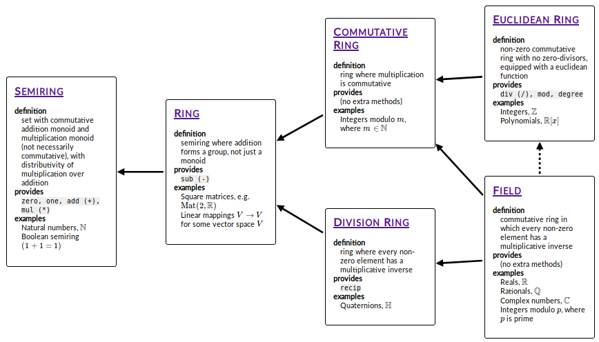
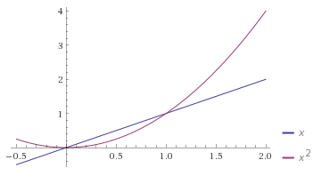

A guide to the PureScript numeric hierarchy¶
Table of contents¶
Introduction¶
Welcome to this guide, which aims to give an introduction to the mathematics behind the numeric hierarchy of type classes in PureScript’s Prelude, aimed at people who haven’t (necessarily) studied mathematics beyond a high-school level.
Why?¶
Normally, algebraic structures like rings or fields are only introduced to students at undergraduate level. One unfortunate side-effect of this is that lots of the material currently available on the web which describes these concepts is sometimes a little inaccessible for people who haven’t studied mathematics past a high-school level. My aim with these posts is to help people develop intuition for what these structures are and how they can be used so that that knowledge can be applied in PureScript code. I also hope that I can help persuade you of the beauty of mathematics and convince you that it is worth studying in its own right.
I want to stress that it is not necessary to read and understand all of this
in order to be able to use the PureScript type classes like Ring or
Field, and to be able to write functions which work for any type which has
a Ring or Field instance. However, I do hope that it will help you
answer questions such as:
- “I want to write a function which works for many different numeric
types, but should I give it a
Semiringconstraint, or aRingconstraint, or something else entirely?” - “I have written a function with a
Fieldconstraint, and I want to find an appropriate concrete type which is aFieldto test it with. How do I do that?” - “What’s the point in all of this maths mumbo-jumbo anyway — what’s wrong with
plain old Haskell-style
Num?”
Prerequisites¶
I will try to assume as little knowledge of mathematics as I can. If I accidentally assume knowledge of something which makes you unable to understand a part of this guide, please let me know by opening an issue on GitHub or emailing me at harry@garrood.me.
Although this guide is primarily aimed at PureScript users, I will only reference PureScript infrequently for the purpose of illustrating examples. This guide is really about mathematics, not PureScript.
Therefore, as far as is reasonably possible, I am also interested in making this guide accessible to programmers using other languages or libraries which make use of these same abstractions (rings, fields, etc). If you fit into this category, and you are unable to follow something I’ve written because it requires more than a very basic level of PureScript knowledge, please feel free to file an issue.
How to read this guide¶
I will provide exercises throughout. Whenever you encounter an exercise, I strongly recommend you attempt it before reading on! I speak from experience as a maths student: in my personal experience, it’s simply not possible to reach the same level of understanding without having worked through problems myself.
I should note that I often find it extremely tempting to skip to the solution, read through it, and tell myself “yes, I could have done that.” Be careful of this! It’s very easy for me to persuade myself that I could have solved a problem when in fact I probably wouldn’t have been able to. But also it’s okay to look at the solution if you’re really stuck; attempting the problem first is the most important thing.
If you get stuck on an exercise for more than, say, 10 minutes, it’s okay to skip it or simply look at the solution (although if you find yourself needing to skip lots of exercises, perhaps consider going back and rereading some earlier bits). Another good idea if you get stuck is to do something else and come back to the problem the following day — of course, if you’re a programmer, you might already know this.
One more thing I will say is that you shouldn’t expect to be able to read this sort of material anywhere nearly as quickly as you might read most other types of non-fiction prose. Mathematical writing is usually extremely dense — I don’t mean this as a criticism of the writing style of mathematicians, but rather to help avoid unrealistic expectations. In fact I think this density is a mostly unavoidable consequence of the nature of mathematics. Don’t be put off if it takes you a long time to get through this!
License¶

This work is licensed under a Creative Commons Attribution-NonCommercial-ShareAlike 4.0 International License.
This means you are free to copy and redistribute it as well as make changes, but you must give credit, link to the license, and indicate if changes were made. The license also forbids commercial use.
Note that the work is not necessarily exclusively licensed under CC BY-NC-SA 4.0. In particular, if you’re worried about whether your use of it counts as a commercial use please contact me and we’ll probably be able to sort something out.
Logic¶
We will start with a short discussion of logic, in particular we will briefly cover some notation and a few proof techniques. We will need these later on to be able to make sense of statements concerning things like rings and fields, and also to prove or disprove these statements.
You will probably be happy with the idea that statements such as “the sky is blue” and “pigs can fly” can have truth-values (i.e. “true” or “false”). There are also ways of combining statements to make new statements, which again you are most likely familiar with already:
- If you have two statements \(P\) and \(Q\), you can make a new statement “\(P \text{ and } Q\)”, which is true if both \(P\) and \(Q\) are true. This is often written as \(P \land Q\).
- Similarly, you can also make a new statement “\(P \text{ or } Q\)”, which is true if at least one of \(P\) and \(Q\) are true. This is often written as \(P \lor Q\).
So for example, if we let the symbol \(P\) represent the statement “the sky is blue”, and let the symbol \(Q\) represent the statement “pigs can fly”, the statement \(P \lor Q\) is true, because at least one of them, in this case \(P\), is true.
Exercise 1.1. Using the same assignment of the symbols \(P\) and \(Q\), what is the truth-value of the statement \(P \land Q\)?
Truth tables¶
We can describe the behaviour of logical operators like \(\land\) and \(\lor\) using things called truth tables. For example, here is the truth table for logical and (\(\land\)):
| \(P\) | \(Q\) | \(P \land Q\) |
|---|---|---|
| T | T | T |
| T | F | F |
| F | T | F |
| F | F | F |
The table lists the four possible combinations of truth-values of \(P\) and \(Q\), as well as the truth-value of \(P \land Q\) in each case. If this isn’t clear, it might help to compare it to an implementation of \(\land\) in PureScript:
logicalAnd :: Boolean -> Boolean -> Boolean
logicalAnd true true = true
logicalAnd true false = false
logicalAnd false true = false
logicalAnd false false = false
Exercise 1.2. Write out the truth table for logical or, \(\lor\).
Logical equivalence¶
We say that two statements are logically equivalent if they always have the same truth value as each other, that is, if they are always either both true or both false. Here is a truth table for logical equivalence with some entries missing:
| \(P\) | \(Q\) | \(P \Leftrightarrow Q\) |
|---|---|---|
| T | T | T |
| T | F | F |
| F | T | ? |
| F | F | ? |
Exercise 1.3. Complete the missing entries of this truth table.
So for example, \(P \land P\) is always logically equivalent to \(P\), regardless of the truth-value of \(P\). We can express this in symbols by using a double-ended arrow like this: \(P \land P \Leftrightarrow P\).
Logical negation¶
Another thing we can do with statements is negate them: make a new statement which is true if the original statement is false, and false if the original statement is true. If \(P\) is a statement, then the logical negation of \(P\) is written as \(\neg P\).
The following two equivalences hold regardless of the truth-values of \(P\) and \(Q\):
These two equivalences are called De Morgan’s laws.
Exercise 1.4. Persuade yourself that De Morgan’s laws hold. One way to do this is to write out a truth table.
Logical implication¶
We now consider statements of the form “if \(P\), then \(Q\)“, for example:
- if it is raining, then we will get wet,
- if \(x\) is even, then it can be divided by \(2\) exactly,
- if \(y\) is even and \(z\) is even, then \(y + z\) is even.
We represent this kind of statement by defining a new logical operator called logical implication, which we write as a rightwards-pointing arrow: \(\text{it is raining} \Rightarrow \text{we will get wet}\).
The logical implication operator is defined as follows:
| \(P\) | \(Q\) | \(P \Rightarrow Q\) |
|---|---|---|
| T | T | T |
| T | F | F |
| F | T | T |
| F | F | T |
That is, \(P \Rightarrow Q\) is a logical statement just like all of the others we have seen, and it has a truth-value which depends on the truth-values of \(P\) and \(Q\).
Exercise 1.5. Persuade yourself, by using a truth table (or any other method that works for you), that \(P \Rightarrow Q\) is always logically equivalent to \(\neg P \lor Q\) regardless of the truth-values of \(P\) and \(Q\).
The standard way of proving a statement of the form \(P \Rightarrow Q\) is to first assume that \(P\) is true, and then show that \(Q\) follows, i.e. show that \(Q\) must also be true.
For example, suppose we wanted to prove the statement
We would start by letting \(x\) be some arbitrary integer and assuming that it is even. Since \(x\) is even, we can write \(x = 2m\) for some integer \(m\). Then, \(x^2 = 4m^2\) and therefore we have shown \(x^2\) has \(4\) as a factor, so it must also have \(2\) as a factor, which means it must be even.
Converses¶
If we have a statement which is a logical implication, for example \(x \text{ is even} \Rightarrow x \text{ can be divided by 2 exactly}\), there is another closely related statement called its converse. To find the converse of an implication statement, we simply swap the two operands. For example, the converse of the statement
is this:
Notice that both of the above statements are true. However, this is often not the case! If a statement is true, it is not safe to assume that its converse is also true. For example, consider the statement
The converse of this statement is
Notice that, while the first is true, the second is not. For instance, if we take \(y = z = 1\), then \(y + z\) is even, but neither \(y\) nor \(z\) is.
Contrapositives¶
If we have a statement which is a logical implication, for example \(\text{my pet is a cat} \Rightarrow \text{my pet is a mammal}\), there is another closely related statement called its contrapositive. To find the contrapositive of a logical implication statement, we swap the operands and negate them both. So, for example, the contrapositive of the statement \(\text{my pet is a cat} \Rightarrow \text{my pet is a mammal}\) is the statement \(\text{my pet is not a mammal} \Rightarrow \text{my pet is not a cat}\).
The first thing to notice is that any implication statement is always logically equivalent to its contrapositive.
Exercise 1.6. Check this! Persuade yourself that \(P \Rightarrow Q\) is always logically equivalent to \(\neg Q \Rightarrow \neg P\), perhaps with a truth table.
This exercise suggests another way of proving statements of the form \(P \Rightarrow Q\), which is to instead assume that \(\neg Q\) is true, and show that \(\neg P\) follows. This technique is called contraposition; the new statement is called the contrapositive of the original one.
Exercise 1.7. Use contraposition to prove the statement
Another way of thinking of logical equivalence is in terms of logical implication. Specifically, an alternative way of defining \(\Leftrightarrow\) is by saying that \(P \Leftrightarrow Q\) is the same as this bad boy:
In fact, the standard way of proving a statement of the form \(P \Leftrightarrow Q\) is to first prove \(P \Rightarrow Q\) and then to prove \(Q \Rightarrow P\).
Sets¶
For our purposes, it will be sufficient to say a set is a collection of any kind of mathematical object: sets may contain numbers, functions, sets of numbers, and so on.
We can write a set by listing the elements in between curly braces, like this:
Note that sets have no concept of ordering, so the set \(\{1, 3, 2\}\) is the same as the set \(\{1, 2, 3\}\).
The only thing we can really do with a set is to ask whether it contains some particular thing. The notation for the statement “\(a\) exists within the set \(A\)” looks like this:
We also have a notation for the negation of this statement, i.e. “\(a\) does not exist within the set \(A\)“:
Often (but not always), uppercase letters denote sets, and lowercase letters denote elements of sets.
Here are a few sets you may have come across already:
- The set of natural numbers, \(\{0, 1, 2, 3, 4, ...\}\). That is, the set of all the integers which are not negative. This set comes up fairly often so we have a special notation for it: \(\mathbb{N}\). (Note: depending on context, \(0\) is sometimes not considered to be an element of \(\mathbb{N}\); in this guide we will say that it is.)
- The set of integers, \(\{0, 1, -1, 2, -2, 3, -3, ...\}\). Like \(\mathbb{N}\) but it also includes negative numbers. We have a special notation for this set too: \(\mathbb{Z}\), from the German Zahlen, which just means “numbers”.
- The set of real numbers, which is the kind of number you’re probably most used to. \(0, 1, 37, \frac{1}{2}\), and \(\pi\) are all examples of real numbers. This set also has a special notation: \(\mathbb{R}\).
So for example, the following are all true:
Quantifiers¶
Up to now, the symbols \(P\) and \(Q\) have always represented statements. However we can also use symbols to represent predicates, which are like functions which return statements. For example, we might have a predicate “\(x\) is even”, “\(x\) is divisible by 6”, or “\(x\) is prime”.
If we let \(P(x)\) represent the predicate “\(x\) is even”, then we can write the statement “2 is even” as \(P(2)\). Similarly we can write the statement “3 is even” as \(P(3)\). In each case we get a statement whose truth-value can depend on the specific value of \(x\) which was chosen — in this case, \(P(2)\) would be true, and \(P(3)\) would be false.
If we have a predicate, we can make statements about the truth-values of a predicate over all the possible values it can take as arguments by using things called quantifiers.
The first quantifier we will introduce is called “for all”, written as an upside-down capital letter A like this: \(\forall\). Here is how we write the statement “the square of any real number is greater than or equal to 0” using the \(\forall\) quantifier:
This can be read as: “For all \(x\) in \(\mathbb{R}\), \(x\) squared is greater than or equal to \(0\).”
The standard way of proving a statement like this is more or less what you might expect: we have to show that every element of the set satisfies the predicate. If the set is finite, we can do this by checking each element individually. However, individual checking quickly gets very tedious for even fairly small sets. Additionally, we often deal with infinite sets, where exhaustively checking each element individually is not possible. Therefore, we will usually prove statements of this kind by constructing an argument which deals with every single element of the set at the same time. In fact, we have already seen an example of such a proof: the proof that \(x\) being even implies that \(x^2\) is also even, from a moment ago.
The other quantifier we will use is written as a back-to-front capital letter E, like this: \(\exists\), and can be read as “there exists”. Here is how we would write the statement “there exists a real number whose square is 4” in mathematical notation:
There are two possible values of \(x\) which you can use as examples to show that this statement is true: \(2\) and \(-2\). In fact, the standard way of proving a statement of the form \(\exists x. P(x)\) is to pick a specific value of \(x\) and demonstrate that \(P(x)\) is true for that \(x\) (again, as you might expect).
Exercise 1.8. Prove the statement \(\exists x \in \mathbb{R}.\; 3x + 4 = 13\) by finding a suitable value for \(x\).
The last thing we need to know in this section is how to negate statements that contain quantifiers. Here goes:
- The negation of the statement \(\forall x. P(x)\) is \(\exists x. \neg P(x)\).
- The negation of the statement \(\exists x. P(x)\) is \(\forall x. \neg P(x)\).
This is all rather pleasingly symmetric, isn’t it? Try to make sense of these two rules if you can; they will be useful later. Hopefully if you think about them for a bit you’ll be able to persuade yourself intuitively why they are true.
Exercise 1.9. Show that the statement \(\forall x \in \mathbb{R}.\; x < x^2\) is false by finding a counterexample — that is, a value of \(x\) such that \(x < x^2\) does not hold. Do you see how we are using the first of the above two rules for negating statements with quantifiers here?
Monoids¶
You are probably already aware of monoids (via the Monoid type class),
since they come up quite often in programming. We’ll just quickly remind
ourselves about what makes something a monoid and cover a few examples, but in
a slightly more mathematically-oriented way. The main aim of this section is to
make you a bit more comfortable about mathematical ideas and notations by using
them to describe an idea which you are hopefully already familiar with. Another
purpose of this section is to prepare you for the next section, in which we
will talk about a specific kind of monoid which turns out to be rather
important.
Here are a few rules about how adding integers together works:
- If we add together two integers, we always get another integer.
- It doesn’t matter what order we bracket up additions, we always get the same answer. That is, \((x + y) + z\) is always the same as \(x + (y + z)\) for any integers \(x, y, z\).
- Adding \(0\) to any integer yields the same integer.
Here are a few more rules about how multiplying integers works:
- If we multiply two integers, we always get another integer.
- It doesn’t matter what order we bracket up multiplications, we always get the same answer. That is, \((xy)z\) is always the same as \(x(yz)\) for any integers \(x, y, z\).
- Multiplying any integer by \(1\) yields the same integer.
Now, instead of integers, we will consider a different set: the set of
truth-values \(\{T, F\}\). This set corresponds to the Boolean type in
PureScript. Here are some rules for how the “logical and” operation
\((\land)\) works on truth-values:
- If we apply the \(\land\) operation to two truth-values, we always get another truth-value.
- It doesn’t matter what order we bracket up \(\land\), we always get the same answer. That is, \((x \land y) \land z\) is the same as \(x \land (y \land z)\) for all \(x, y, z\).
- \(P \land T\) is always the same as \(P\), for any truth-value
\(P\). If it’s not obvious what I mean by \(P \land T\), it means the
same thing as the PureScript code
p && true.
Hopefully a pattern will be starting to emerge: in each case, we have a set, an operation which gives us a way of combining two elements of that set to produce another element of the same set, and some rules that the operation should satisfy. The general definition of a monoid is as follows:
A monoid is a set \(M\), together with an operation \(*\), such that the following laws hold:
- Closure. \(\forall x, y \in M.\; x * y \in M\).
- Associativity. \(\forall x, y, z \in M.\; (x * y) * z = x * (y * z)\).
- Identity. \(\exists e \in M.\; \forall x \in M.\; e * x = x * e = x\).
Looking back to the examples above, we have the monoids of:
- the integers under addition, where the set is \(\mathbb{Z}\), the operation is addition, and the identity element is \(0\),
- the integers under multiplication, where the set is \(\mathbb{Z}\), the operation is multiplication, and the identity element is \(1\),
- truth values under logical and, where the set is \(\{T, F\}\), the operation is \(\land\), and the identity element is \(T\).
The operation \(*\) corresponds to append in PureScript, and that the
identity element (conventionally written \(e\)) corresponds to mempty
in PureScript.
We will now look at a few non-examples of monoids and talk about why they fail to be monoids.
First, if we take the set of natural numbers which are less than 4, that is \(\{0, 1, 2, 3\}\), and take addition as the operation, this fails to be a monoid because it does not satisfy closure. To show this we need to find a pair of elements such that their sum is not in the set. One such choice is \(3 + 1\), which of course equals \(4\), which is not in the set. We say that a set is closed under an operation if performing that operation on two elements of the set always produces another element of the set; this is where the name “closure” comes from.
An example of something failing to be a monoid because the operation is not
associative could be the set of floating point number values under addition.
For example, try (0.1 + 0.2) + 0.3 in a console, and compare the result to
0.1 + (0.2 + 0.3).
An example of something failing to be a monoid because of a lack of an identity element could be the set of even numbers under multiplication. The first two laws are satisfied, but since 1 is not an even number, we don’t have an identity element.
A brief interlude on notation: if we want to refer to a specific monoid, we write it as a pair where the first element is the set and the second is the operation. For example, the monoid of integers under addition is written as \((\mathbb{Z}, +)\). If it is clear from context which operation we are talking about, we often omit the operation and just write the set, e.g. we might simply say \(\mathbb{Z}\) is a monoid.
Exercise 2.1. Consider the set of natural numbers together with the operation of subtraction: \((\mathbb{N}, -)\). This is not a monoid. Can you say which of the three laws fail to hold (it might be more than one) and why?
Exercise 2.2. The set of rational numbers is the set of numbers which can be written as the ratio of two integers \(\frac{a}{b}\). There is a short-hand notation for this set too: \(\mathbb{Q}\) (for “quotient”). Show that \((\mathbb{Q}, +)\) is a monoid by checking each of the three laws. What is the identity element?
Uniqueness of identity elements¶
Exercise 2.3. (Harder) Prove that a monoid can only have one identity element. To do this, first suppose that you have two elements of some monoid; call them, say, \(e\) and \(e'\), and then show that if they are both identity elements then they must be equal to each other. Be careful here: it’s not enough to take one specific example of a monoid and show that it only has one identity element. You have to construct an argument which will work for any monoid, which means you aren’t allowed to assume anything beyond what is in the definition of a monoid.
Note
In general, if we want to prove that there is a unique element of some set which has some particular property, we do this by taking two arbitrary elements of the set, assuming that they both have this property, and then showing that they must be equal.
Since monoids have a unique identity element, we can talk about the identity element of a monoid, rather than just an identity element.
Some more examples¶
Consider the set \(\{e\}\), which contains precisely one element, \(e\). We can define an operation \(*\) on this set as follows:
That’s all we need to do to define \(*\), because there are no other
possible values to consider. Then, \(\{e\}\) is a monoid. It’s not very
interesting which is why it gets called the trivial monoid. This corresponds
exactly to the Unit type in PureScript; the Unit type has precisely
this Monoid instance too.
Let \(X\) be any set, and consider the set of functions from \(X\) to \(X\), which we denote by \(\mathrm{Maps}(X, X)\). If we take function composition \(\circ\) as our operation, we have a monoid \((\mathrm{Maps}(X, X), \circ)\). Let’s check this:
- Closure. The composite of two functions from \(X\) to \(X\) is itself a function from \(X\) to \(X\), so closure is satisfied.
- Associativity. Function composition is associative, so associativity is satisfied.
- Identity. The identity function \(e : X \rightarrow X\) defined by \(e(x) = x\) for all \(x \in X\) is the identity element with respect to function composition, so identity is satisfied.
This may seem a bit abstract, so here’s a concrete example. We will take the set \(X\) to be the set \(\{A, B\}\) which contains just two elements. (The elements \(A\) and \(B\) don’t really mean anything here, they’re just symbols.) Then there are four functions from \(X\) to \(X\):
- The identity function \(e(x) = x\),
- The constant functions \(f_A\) and \(f_B\), which ignore their argument and always return \(A\) and \(B\) respectively, and
- The swapping function \(f_{swap}\), which sends \(A\) to \(B\), and \(B\) to \(A\).
In PureScript:
e :: X -> X
e x = x
-- or simply e = identity
fA :: X -> X
fA _ = A
-- or simply f1 = const A
fB :: X -> X
fB _ = B
-- or simply f2 = const B
fSwap :: X -> X
fSwap A = B
fSwap B = A
Here are a few examples of how the monoid operation works in this monoid:
(check that you agree).
This monoid is implemented in PureScript in the module Data.Monoid.Endo,
which is part of the purescript-prelude library.
We now move on to the last example of a monoid in this chapter:
Exercise 2.4. Let \((M, *)\) be any monoid, and let \(X\) be any set. Define an operation \(\star\) on the set \(\mathrm{Maps}(X, M)\) — that is, the set of functions from \(X\) to \(M\) — as follows:
On notation: the arrow (\(\mapsto\)) can be read “maps to”. The
mathematical notation \(x \mapsto x + 4\) means essentially the same thing
as the PureScript code \x -> x + 4, that is, it denotes a function.
That is, the star product \(\star\) of two functions \(f\) and \(g\) is a new function which applies both \(f\) and \(g\) to its argument, and then combines the results using the monoid operation \(*\) from the monoid \(M\). Prove that \((\mathrm{Maps}(X, M), \star)\) is a monoid; what is the identity element?
The monoid in this exercise is also implemented in PureScript’s Prelude;
in fact it is the default Monoid instance for functions, written as
Monoid b => Monoid (a -> b).
Groups¶
Suppose we have some arbitrary monoid \((M, *)\), and we are given two elements \(a, b \in M\), and we want to solve an equation of the form:
That is, we want to find some \(x \in M\) such that the equation is satisfied. Can we always do this?
We will start by looking at some examples. First consider \((\mathbb{Z}, +)\). In this case, one example of such an equation might be this:
You can probably see how to solve this already: simply subtract 4 from both sides, and you’re left with this:
Easy. In fact, with this monoid, we can always solve this kind of equation, regardless of which values of \(a\) and \(b\) we are given: in general, the solution is \(x = b - a\).
Now we consider a different monoid: \((\mathbb{N}, +)\). Can we solve the following equation with this monoid?
We can’t! If we were working with a set which contains negative numbers, we would be fine: in this case, the answer would be \(-2\). But \(-2 \notin \mathbb{N}\).
Exercise 3.1. Can you think of another example of a monoid \(M\) and elements \(a, b \in M\) so that the equation \(a*x = b\) has no solutions in \(M\)? Hint: we discussed one possible monoid in the previous chapter.
So it appears that there’s some fundamental difference between the monoids \((\mathbb{Z}, +)\) and \((\mathbb{N}, +)\). This suggests that there might be a way of categorising monoids, based on whether any equation of this form can be solved. Our next task as mathematicians is to try to make this a bit more precise!
We do this by defining a new algebraic structure called a group, which is a monoid with one extra requirement. Suppose we have a monoid \((G, *)\). We say that \((G, *)\) is a group if and only if it satisfies this additional law:
- Inverses. \(\forall g \in G.\; \exists h \in G.\; g * h = h * g = e\)
That is, every element has an inverse, and combining an element with its inverse gives you the identity.
If you’re wondering why I’m using different letters now, it’s nothing more than a convention: people generally use \(G\) to refer to some arbitrary group, and lowercase letters starting from \(g\) to refer to elements of a group.
We often omit the \(*\) symbol; you might see people expressing the above property as \(\forall g \in G.\; \exists h \in G.\; gh = hg = e\).
\((\mathbb{Z}, +)\) is the first example of a group we will consider. In this group, the inverse of \(1\) is \(-1\), the inverse of \(-5\) is \(5\), and in general the inverse of \(x\) is \(-x\).
\((\mathbb{N}, +)\) is not a group, because no positive elements have inverses.
\((\mathbb{Q}, +)\) and \((\mathbb{R}, +)\) are both groups, and these groups both have the same rule for finding inverses as we saw with \((\mathbb{Z}, +)\). That is, we find the inverse of an element by multiplying by \(-1\).
The trivial monoid is also a group, and unsurprisingly we call it the trivial group. To show that the trivial monoid is a group, we need to find an inverse for every element. Because the trivial monoid only has one element, there’s only one element which we need to find an inverse for: \(e\). Similarly there’s only one candidate for that inverse: also \(e\). We already know that \(e * e = e\) so we are good; \(e^{-1} = e\), and \(\{e\}\) is a group.
Uniqueness of inverses¶
It turns out that in any group, every element has exactly one inverse. We can prove this:
Let \((G, *)\) be a group, and let \(g \in G\). Suppose we have two additional elements, \(h_1, h_2 \in G\), such that \(h_1\) and \(h_2\) are both inverses of \(g\).
Then:
- \(h_1\) is equal to \(h_1 * e\), since \(e\) is the identity element.
- \(h_1 * e\) is in turn equal to \(h_1 * (g * h_2)\): since \(g\) and \(h_2\) are inverses, we can replace \(e\) with \(g * h_2\).
- \(h_1 * (g * h_2)\) is equal to \((h_1 * g) * h_2\) by the associativity law.
- \((h_1 * g) * h_2\) is equal to \(e * h_2\) since \(g\) and \(h_1\) are inverses.
- \(e * h_2\) is just \(h_2\).
So \(h_1 = h_2\), and therefore we have shown that any element has exactly one inverse.
Because elements of a group always have exactly one inverse, we can talk about the inverse of an element, as opposed to just an inverse of an element (just like with identity elements of monoids). Also, we can define a notation for the inverse of an element: if \(g\) is some element of a group, then we often write the inverse of \(g\) as \(g^{-1}\).
Warning
This notation can be a little treacherous: it isn’t always the same as exponentiation of numbers which you have probably seen before. It depends on the group we’re talking about. For example, we saw that in \((\mathbb{Z}, +)\), we find the inverse of an element by negating it. So in \((\mathbb{Z}, +)\), we could write that \(4^{-1} = -4\). Normally, however, we would expect that \(4^{-1}\) means the same thing as \(1/4\). This ambiguity can be a bit awkward, so it’s best to avoid this notation for inverses in cases where it can be ambiguous.
Exercise 3.2. In an arbitrary group, what is the inverse of the identity element?
Exercise 3.3. Let \(G\) be a group, and let \(g, h \in G\). Show that \(g^{-1} h^{-1} = (hg)^{-1}\).
Modular arithmetic¶
Finite groups — that is, groups with a finite number of elements — are often a little easier to deal with, so we will now talk about an example of a finite group. Modular arithmetic is a fairly widely known concept, but we will cover it in a slightly more rigorous way than you may have seen before; the reason I have done this is that it will help explain other concepts further along.
Let \(x, y, m \in \mathbb{Z},\) with \(m > 0\). We say that \(x\) is congruent to \(y\) modulo \(m\) if and only if \(x - y\) is a multiple of \(m\). In mathematical notation:
For example, we will take \(m = 12\). Then, \(15\) is congruent to \(3\) modulo \(12\), because \(15 - 3 = 12\). Also, \(27\) is congruent to \(3\) modulo \(12\), because \(27 - 3 = 24 = 2 \times 12\).
By contrast, \(2\) is not congruent to \(1\) modulo \(12\), because \(2 - 1 = 1\) and \(1\) is not an integer multiple of \(12\).
Note that any integer is congruent to itself modulo \(12\), because we say that \(0\) counts as an integer multiple of \(12\); we can take \(a = 0\) in the definition above and we see that \(0 \times 12 = 0\).
Now, we ask: given some integer \(x \in \mathbb{Z}\), and a modulus \(m \in \mathbb{Z}, m > 0\), can we find the entire set of integers which are congruent to \(x\) modulo \(m\)? For example, can we find the entire set of integers congruent to \(0\) modulo \(12\)?
Before we continue, we will introduce a new notation to describe sets like this. It is called set-builder notation, and it looks like this:
Read: “the set of \(y\) in \(\mathbb{Z}\) such that \(x\) is congruent to \(y\) modulo \(m\)“.
We will define \(\overline{x}\) to be this set; that is:
The set \(\overline{x}\) is called the congruence class of \(x\).
In particular, when \(m = 12\), we have seen that \(15 \in \overline{3}\), and \(27 \in \overline{3}\), but \(2 \notin \overline{1}\). It turns out that in this case, \(\overline{15}\) is actually the exact same set as \(\overline{3}\), and again the exact same set as \(\overline{27}\).
In fact, for any \(x \in \mathbb{Z}\), we have that \(\overline{x} = \overline{x + m}\). To prove that two sets \(U\) and \(V\) are the same, we first need to show that every element of \(U\) is an element of \(V\), and then we show that every element of \(V\) is also an element of \(U\). It’s not enough to just do one of these steps; we need to do both, because \(U\) might be a subset of \(V\) or vice versa, and both steps are required to rule this out.
Therefore, we first prove that every element of \(\overline{x}\) is also an element of \(\overline{x + m}\). Let \(x, y \in \mathbb{Z}\), with \(y \in \overline{x}\). Then, there exists an \(a \in \mathbb{Z}\) such that \(x - y = am\). Then, adding \(m\) to both sides, we have:
That is, \(x + m \equiv y \; (\mathrm{mod} \; m)\) and \(y \in \overline{x + m}\). So if \(y \in \overline{x}\), then we also have that \(y \in \overline{x + m}\). The second part of the proof, that is, showing that every element of \(\overline{x + m}\) is also an element of \(\overline{x}\), is very similar: the main difference is that we subtract \(m\) from both sides instead of adding.
The important thing to take from all this is that there are exactly \(m\) such congruence classes. We will define a set \(\mathbb{Z}_m\) containing all of these, which we can write as \(\overline{0}\) up to \(\overline{m-1}\):
Then, for each \(m \in \mathbb{Z}, m > 0\), every \(x \in \mathbb{Z}\) is contained in exactly one element of \(\mathbb{Z}_{m}\). I omit a proof of this, but it follows as a consequence of congruence modulo \(m\) being a particular kind of relation called an equivalence relation. I might expand on equivalence relations in a future version of this guide.
We can define an addition operation on this set, too:
For example, in \(\mathbb{Z}_{12}\), we have that \(\overline{8} + \overline{9} = \overline{8 + 9} = \overline{17} = \overline{5}\).
It turns out that this addition operation satisfies all of the group axioms, so we have a finite group. In particular, \(\overline{0}\) is the identity element. Again, I won’t prove this right now for the sake of expediency, although I might put a proof in an appendix later.
Exercise 3.4.a. Which element of \(\mathbb{Z}_{12}\) solves the equation \(\overline{3} + \overline{x} = \overline{2}\)?
Exercise 3.4.b. What is the additive inverse of \(\overline{5}\) in \(\mathbb{Z}_{12}\)? That is, which element of \(\mathbb{Z}_{12}\) solves the equation \(\overline{5} + \overline{x} = \overline{0}\)?
Permutations¶
We now consider another example of a finite group which arises from the monoid \((\mathrm{Maps}(X, X), \circ)\), which we saw in the previous chapter.
Firstly, a very brief interlude on functions and terminology: a function sends elements in one set to elements of some other set. If a function \(f\) sends elements of the set \(X\) to elements of the set \(Y\), we indicate this using mathematical notation by writing \(f : X \rightarrow Y\), or equivalently, \(f \in \mathrm{Maps}(X, Y)\). We call the set \(X\), from which \(f\) takes its argument, the domain; we call the set \(Y\), to which \(f\) sends those elements, the codomain.
The first thing to notice is that not all elements of \(\mathrm{Maps}(X, X)\) are invertible; that is, given some \(f \in \mathrm{Maps}(X, X)\), we can’t always find a \(g \in \mathrm{Maps}(X, X)\) such that \(f \circ g = g \circ f = e\). For example, suppose that we take \(X = \{A, B\}\) as before. We defined a function \(f_A\) in the previous chapter which sends both \(A\) and \(B\) to \(A\). To invert \(f_A\), we need to come up with a rule, so that if we are given any element \(y \in Y\), we can find the unique element \(x \in X\) satisfying \(f_A(x) = y\). That is, given the result of applying \(f_A\) to something, we have to be able to find that thing.
But this is impossible! Suppose we are told that the result of applying \(f_A\) to something was \(A\). Well, \(f_A\) always produces \(A\), regardless of what you put in, so we can’t know what the original thing was; it could just as well have been \(A\) or \(B\) as far as we know.
Alternatively, suppose we are told that the result of applying \(f_A\) to something was \(B\). But \(f_A\) never produces \(B\) as its result, so we certainly can’t find some other element \(x\) such that \(f_A(x) = B\).
So \(f_A\) is not invertible, and similarly, neither is \(f_B\) (recall that \(f_B\) was defined similarly to \(f_A\), except that the result is always \(B\) rather than \(A\)).
However, \(f_{swap}\) is invertible, and its inverse is \(f_{swap}\) (itself).
We have a few ways of classifying functions which we need to talk about briefly before continuing. Specifically, we need to clarify what it means for a function to be invertible.
Injectivity¶
Firstly, as we saw with \(f_A\), we can’t invert a function if it sends two different things to the same thing. Another example: the function \(f : \mathbb{R} \rightarrow \mathbb{R}\) given by \(f (x) = x^2\) sends both of \(2\) and \(-2\) to \(4\), so it is not invertible.
Functions which don’t suffer from this problem are called injective. We say that a function \(f : X \rightarrow Y\) is injective if and only if
The identity function \(f(x) = x\) is injective, as is the function \(f(x) = x^3\). For functions from \(\mathbb{R}\) to \(\mathbb{R}\), a good way of thinking about injectivity is that a function \(f\) is injective if and only if any horizontal line drawn on a graph will only intersect with the curve \(y = f(x)\) at most once — that is, either exactly once or not at all.
Surjectivity¶
Another problem that we saw with \(f_A\) is that we can’t invert a function if there is some element in the codomain which isn’t ‘hit’ by the function. That is, if there’s no element \(y\) in the codomain such that \(f(x) = y\) for some \(x\) in the domain, we can’t invert it, because we don’t have anything to send \(y\) to. The function \(f : \mathbb{R} \rightarrow \mathbb{R}\) defined by \(f(x) = x^2\) also suffers from this problem: there’s no real number \(x\) such that \(x^2 = -1\), for example.
We call functions that don’t suffer from this problem surjective. We say that a function \(f : X \rightarrow Y\) is surjective if and only if
The functions \(f(x) = x\) and \(f(x) = x^3\) are surjective in addition to being injective. Using a similar idea to the one we had with injectivity, a function \(f : \mathbb{R} \rightarrow \mathbb{R}\) is surjective if and only if any horizontal line drawn on a graph will intersect with the curve \(y = f(x)\) at least once.
Bijectivity¶
We are now ready to say what an invertible function is: a function is invertible if it is both injective and surjective. Functions which are both injective and surjective are also called bijective.
Note
You might ask what the point is of having two words, bijective and invertible, which mean the same thing. It might just be a historical accident. There is a subtle difference between these words though: the word ‘invertible’ is quite general, as it can refer to many different kinds of objects; by contrast, ‘bijective’ almost always refers to functions.
If a function \(f : X \rightarrow Y\) is bijective, then it has an inverse, which we usually write as \(f^{-1} : Y \rightarrow X\). For the inverse of \(f\), we have that \(f^{-1}(f(x)) = x\) for all \(x \in X\), and additionally \(f(f^{-1}(y)) = y\) for all \(y \in Y\). In essence, \(f^{-1}\) undoes the effect of \(f\), putting us back to where we started.
Going back to the example from the last chapter, \(e\) and \(f_{swap}\) are both injective and surjective and thus bijective, while \(f_A\) and \(f_B\) fail to be either injective or surjective.
The symmetric group¶
If \(X\) is some finite set, and we want to make a group out of \((\mathrm{Maps}(X, X), \circ)\), all we need to do is discard the elements of \(\mathrm{Maps}(X, X)\) which fail to be bijective.
Because the actual set \(X\) we choose doesn’t really matter in the context of group theory, it is conventional to use integers from \(1\) up to \(n\); that is, we take \(X = \{ 1, 2, ... , n \}\). Clearly, then, this set has \(n\) elements.
The group of permutations on this set is very important, so it has a name: it is called the symmetric group of degree \(n\). We denote this group by \(S_n\).
Note
Be careful not to confuse the set \(\{ 1, 2, ... , n\}\) with the group of permutations on that set, \(S_n\). Remember that the elements of \(S_n\) are functions, not numbers.
Exercise 3.5. If \(n\) is a positive integer, the product of all positive integers less than or equal to \(n\) is called \(n\) factorial, written \(n!\). Show that \(S_n\) has \(n!\) elements.
As for checking the group laws for \(S_n\): we have already shown that \((\mathrm{Maps}(X, X), \circ)\) is a monoid, which means that we get associativity “for free”, since we’re using the same operation as before. The identity function is bijective, which means we don’t discard it and we can use it for the identity element in our group, and so the identity law is satisfied too. Also, we know that bijective functions have inverses, so the inverses law is satisfied. The only thing left to check is closure; that is, we need to check that the composite of two bijective functions is itself bijective. This is true, although I will not prove it here. I encourage you to look for a proof elsewhere on the web if you’re itching to see one.
Cancellation¶
Now that we have seen a few more examples of groups, we go back to our original problem, except this time, we assume that we have a group, not just a monoid. That is, we let \((G, *)\) be some group, and let \(a, b \in G\). We want to know if there is a solution to the equation
Because it’s an equation, we can do the same thing to both sides, so we will combine both sides with \(a^{-1}\) on the left, like this:
We can now cancel:
And we have solved for \(x\). So, if we are dealing with a group, then an equation of the form \(a * x = b\) always has exactly one solution. Cancellation — the ability to move elements to the other side of equations like this — is arguably a defining property of groups.
Abelian groups¶
Before moving on we just need to talk about one more specific kind of group.
We say that a group is an Abelian group, or a commutative group, if it satisfies the following additional law:
- Commutativity. \(\forall g, h \in G.\; g*h = h*g\).
Almost all of the groups we have seen so far have been Abelian; in particular, you were probably already aware that \(x + y = y + x\) for all \(x, y \in \mathbb{R}\).
The only non-Abelian groups we have seen so far are the symmetric groups: the symmetric group of degree \(n\) is non-Abelian whenever \(n \geq 3\).
It is possible to prove, although we will not do so here, that any non-Abelian group must have at least \(6\) elements. In fact, the symmetric group of degree \(3\), that is \(S_3\), is the smallest possible non-Abelian group, with exactly \(6\) elements.
A final note on groups¶
Groups might seem like a simple concept but they give rise to an astonishing amount of rather lovely mathematics. I don’t want to dwell on them too much here, because we want to get on to rings and fields and things, but I recommend studying them in more depth if you get the chance.
In my experience, it’s fairly uncommon to want a Group type class in PureScript code, but if you do ever happen to want one, it’s in the purescript-group library.
Rings¶
Congratulations on getting this far — we are finally ready to introduce rings!
I will begin by reminding you of some properties that the real numbers have.
Firstly, \((\mathbb{R}, +)\) is an Abelian group, where the identity element is \(0\).
Secondly, \((\mathbb{R}, \times)\) — that is, the set \(\mathbb{R}\) together with multiplication — is a monoid, where the identity element is \(1\).
Thirdly, multiplication distributes over addition. What this means is that for all \(x, y, z \in \mathbb{R},\)
Now we will consider a different set: the set of truth-values \(\{T, F\}\), which from now on I will call \(\mathrm{Bool}\). I will first introduce a new operation on \(\mathrm{Bool}\) called exclusive-or or XOR for short, written \(\oplus\):
| \(P\) | \(Q\) | \(P \oplus Q\) |
|---|---|---|
| T | T | F |
| T | F | T |
| F | T | T |
| F | F | F |
An easy way to remember this is that \(P \oplus Q\) is true if and only if \(P\) is different from \(Q\).
Firstly, \((\mathrm{Bool}, \oplus)\) is an Abelian group, with identity \(F\) (check this yourself if you want to).
Secondly, \((\mathrm{Bool}, \land)\) is a monoid, with identity \(T\) (we saw this monoid earlier on, in the monoids chapter).
Thirdly, \(\land\) distributes over \(\oplus\); that is, for all \(P, Q, R \in \mathrm{Bool},\)
I also encourage you to check this for yourself. Note that there are eight possibilities to consider, since we need to check that this works for any choice of \(P, Q,\) and \(R\).
The last example I will talk about before giving you the definition of a ring is \(\mathbb{Z}_3\), the set of integers modulo \(3\), which we saw in the previous chapter. Recall that \(\mathbb{Z}_3\) has three elements:
We saw in the previous chapter how to define an addition operation on \(\mathbb{Z}_3\) so that \((\mathbb{Z}_3, +)\) is an Abelian group, with identity \(\overline{0}\).
I will now reveal that we can define a multiplication operation in \(\mathbb{Z}_3\), which I will write as \(\cdot\), like this:
For example, \(\overline{1} \cdot \overline{2} = \overline{1 \times 2} = \overline{2}\), and \(\overline{2} \cdot \overline{2} = \overline{2 \times 2} = \overline{4} = \overline{1}\).
This makes \((\mathbb{Z}_3, \cdot)\) into a monoid, with identity \(\overline{1}\).
Finally, multiplication distributes over addition in \(\mathbb{Z}_3\) too; we sort of get this “for free” since we have defined multiplication and addition in terms of normal multiplication and addition in \(\mathbb{Z}\).
Putting all this together, we see that \(\mathbb{Z}_3\) is a ring. In fact, \(\mathbb{Z}_m\) is a ring for any positive integer \(m\), with multiplication defined in exactly the same way. So for example, in \(\mathbb{Z}_{12}\), we have \(\overline{5} \cdot \overline{6} = \overline{30} = \overline{6}\).
The definition¶
Now that you have seen some examples, I will give you the definition of a ring. A ring is a set \(R\) equipped with two binary operations \(+\) and \(\cdot\), called “addition” and “multiplication” respectively, such that the three following laws hold:
- \((R, +)\) is an Abelian group.
- \((R, \cdot)\) is a monoid.
- Multiplication distributes over addition. That is, for all \(x, y, z \in R,\)
From now on I will generally omit the \(\cdot\) symbol and represent multiplication by writing two symbols next to each other; that is, I will write \(xy\) to mean \(x \cdot y\).
We call the the identity element of the group \((R, +)\) the additive identity of the ring \(R\). The additive identity is written as \(0_R\) or just \(0\) when it’s clear from context which ring \(R\) we are talking about. Similarly, we call the identity element of the monoid \((R, \cdot)\) the multiplicative identity of the ring \(R\). The multiplicative identity is written as \(1_R\) or simply \(1\) when it’s clear which ring we are using.
Since \(R\) forms a group under addition, every element \(x \in R\) has an additive inverse, which we will write \(-x\). We also write \(x - y\) as a shorthand for \(x + (-y)\).
An important thing to note is that in a ring, multiplication need not be commutative! A ring in which the multiplication operation is commutative is called a commutative ring. So far, all the rings we have seen have commutative, but we will soon see some examples of non-commutative rings.
One last thing that I should mention quickly: just as there is a trivial monoid and a trivial group, there is a trivial ring with just one element, usually written \(\{0\}\). This ring is called the zero ring. It is not very interesting so we often rule it out by saying we a dealing with a “non-zero ring”; this phrase is nothing more than a shorthand for “any ring but the zero ring”.
Properties of rings¶
So I have just shown you three examples of rings: \(\mathbb{R}\), \(\mathrm{Bool}\), and \(\mathbb{Z}_m\). I will introduce a few more exotic examples of rings in subsequent chapters, but for now, we will establish a few properties which all rings have.
The first property is that \(\forall x \in R.\; 0x = 0\). That is, multiplying anything by \(0\) yields \(0\). We will prove this using just the ring laws, so that we know it is true for any ring.
Let \(R\) be a ring, and let \(x \in R\). Then:
- We know that \(0x = (0 + 0)x\), since \(0\) is the additive identity, and so anything is equal to itself plus \(0\).
- By the distributive law, \((0 + 0)x = 0x + 0x\).
- We now have that \(0x = 0x + 0x\). Because we know that \(R\) is a group under addition, we can subtract \(0x\) from both sides, yielding \(0 = 0x\), as required.
Another property which holds for all rings \(R\) is that \(\forall x, y \in R.\; (-x)y = -(xy)\). We can prove this too:
- By distributivity, we know that \(xy + (-x)y = (x + (-x))y.\)
- Since \(-x\) is the additive inverse of \(x\), we know that \((x + (-x))y = 0y.\)
- We proved a moment ago that \(\, 0y = 0.\)
- So \(\, xy + (-x)y = 0; \,\) subtracting \(xy\) from both sides yields \((-x)y = -(xy)\), as required.
Exercise 4.1. Let \(R\) be a ring. Prove that \((-x)(-y) = xy\) for all \(x, y \in R\). Maybe you will find this a satisfying explanation of why “a minus times a minus is a plus”!
Semirings¶
We might want to come up with a slightly weaker structure than a ring, in which we only require that \((R, +)\) is a commutative monoid rather than a group. Unfortunately, though, if we do this, our proof that anything times \(0\) is \(0\) will no longer work, because in the proof we used the fact that any ring forms a group under its addition operation.
Having multiplication by \(0\) always produce \(0\) is a useful property, though, so to make sure it still holds, we add it as an extra law. We then obtain the following:
A semiring is a set \(R\) equipped with two binary operations \(+\) and \(\cdot\), called “addition” and “multiplication” respectively, such that the three following laws hold:
- \((R, +)\) is a commutative monoid.
- \((R, \cdot)\) is a monoid.
- Multiplication distributes over addition. That is, for all \(x, y, z \in R,\)
- Anything multiplied by \(0\) is \(0\).
I won’t spend too much time talking about semirings in this guide, as most of the number systems you’re likely to be dealing with as a programmer have more structure. I’ll just give a couple of examples before we move on:
The natural example of a semiring is the natural numbers \(\mathbb{N}\); recall that \((\mathbb{N}, +)\) is a commutative monoid but not a group. Therefore, \(\mathbb{N}\) is a semiring but not a ring.
The simplest semiring which is not a ring is called the Boolean semiring. It has just two elements, \(0\) and \(1\), and it is defined by the equation \(1 + 1 = 1\). Note that we don’t need to specify the results of adding or multiplying any other elements, because the semiring laws already tell us what they will be. The Boolean semiring is different from the ring \(\mathrm{Bool}\) above; recall that in \(\mathrm{Bool}\), we have \(1 + 1 = 0\).
Matrices¶
Matrices are a source of many important examples of rings and fields, so we’re going to get a bit more concrete in this chapter and talk about matrices for a bit. You may already be aware that matrices have many applications in computing; two examples that spring to my mind are computer graphics and machine learning.
Vectors¶
We begin by talking about vectors in \(\mathbb{R}^n\); if you haven’t seen this before, an element of \(\mathbb{R}^n\) is an ordered collection of \(n\) elements of \(\mathbb{R}\). We usually write vectors in a column, and it’s also conventional to use bold symbols for vectors (to help distinguish them from scalars, which are elements of \(\mathbb{R}\)). For example:
Sometimes it’s helpful to be able to write vectors on one line, and we do so by listing the components in parentheses, separated by commas. For example, \(\boldsymbol{x} = (1, 0)\).
We define addition for \(\mathbb{R}^n\) by adding corresponding components:
The identity element of vector addition is the zero vector; the vector which has a zero for every component. This is quite an important vector so we have a short-hand notation for it, which is a bold zero:
We can also multiply every component of a vector by some fixed number. This operation is called scalar multiplication:
Exercise 5.1. We have seen that \(\mathbb{R}^2\) is closed under vector addition (that is, adding two vectors always gives you another vector), and also that there is an identity element for vector addition in \(\mathbb{R}^2\). Now, show that \((\mathbb{R}^2, +)\) is a monoid by checking the remaining monoid law (associativity).
Exercise 5.2. Show that \((\mathbb{R}^2, +)\) is a group by explaining how to find the inverse of an element.
Note
\((\mathbb{R}^n, +)\) is actually a group for any \(n\), not just \(n = 2\). We will spend the majority of this chapter working with \(\mathbb{R}^2\), but everything we’re doing generalises very naturally to larger choices of \(n\).
Exercise 5.3. Show that scalar multiplication distributes over vector addition in \(\mathbb{R}^2\); that is, \(\forall \boldsymbol{x}, \boldsymbol{y} \in \mathbb{R}^2, k \in \mathbb{R}.\; k(\boldsymbol{x} + \boldsymbol{y}) = k\boldsymbol{x} + k\boldsymbol{y}\).
There is one more vector operation we need, called the dot product. It takes two vectors in \(\mathbb{R}^n\) and produces as a result a single element of \(\mathbb{R}\), by multiplying corresponding components together and then adding all of the results:
The dot product is sometimes also called the scalar product because the result is a scalar.
The dot product interacts nicely with the other two vector operations; the following are true for any vectors \(\boldsymbol{x}, \boldsymbol{y}, \boldsymbol{z} \in \mathbb{R}^2\) and scalars \(k_1, k_2 \in \mathbb{R}\):
We sometimes need to be a bit careful about keeping track of which operations are which; in particular, note that in the first equation, we have vector addition on the left hand side, but scalar addition on the right.
Exercise 5.4. Prove these two identities regarding the interaction of the dot product with vector addition and scalar multiplication respectively. Hint: we already know that multiplication distributes over addition in \(\mathbb{R}\); that is, \(\forall x, y, z \in \mathbb{R}.\; x(y + z) = xy + xz\).
Linear mappings¶
Let \(f\) be a function from \(\mathbb{R}^2\) to \(\mathbb{R}^2\), such that the following two laws are satisfied for all \(\boldsymbol{x}, \boldsymbol{y} \in \mathbb{R}^2, k \in \mathbb{R}\):
That is, if we have a pair of vectors and a function \(f\) defined as above, we can add the vectors together and then apply \(f\), or we can apply \(f\) to each of the vectors individually and then add the results together, but in both cases we will always get the same result. Similarly if we have a vector and a scalar, we can multiply the vector by the scalar and then apply \(f\), or apply \(f\) to the vector first and then do the scalar multiplication on the result, but either way the we end up with the same vector.
Functions of this kind are important enough that we have a name for them: linear mappings.
Here is one example of a linear mapping:
Try choosing a couple of vectors in \(\mathbb{R}^2\) and checking that the linear mapping laws are satisfied with those vectors.
Here is an example of a function which fails to be a linear mapping:
For example, if we take \(\boldsymbol{x} = (2, 0)\) and \(k = 3\), then
However, if we apply the function first and then do the scalar multiplication, we get a different result:
Describing linear mappings with dot products¶
Now, suppose we have 2 vectors \(\boldsymbol{a_1}, \boldsymbol{a_2}, \in \mathbb{R}^2\). We can use these to define a function which maps vectors in \(\mathbb{R}^2\) to vectors in \(\mathbb{R}^2\) like this:
That is, we produce a new vector where the first component is the dot product of \(\boldsymbol{a_1}\) with the parameter \(\boldsymbol{x}\), and the second component is the dot product of \(\boldsymbol{a_2}\) with \(\boldsymbol{x}\).
For example, let us take the following vectors for \(\boldsymbol{a_1}\) and \(\boldsymbol{a_2}\):
We can now define a function using them:
This particular function takes \((1,1)\) to \((1,2)\), and it takes \((2,0)\) to \((2, 8)\) — check this!
It turns out that functions which can be defined in terms of dot products like this are precisely linear mappings — that is, if you define a function in terms of dot products in this way, it will always be a linear mapping, and conversely, any linear mapping can be described in terms of dot products like we have just done here.
Exercise 5.5. Show that any function defined in terms of dot products will be a linear mapping, using previously given properties of the dot product.
Exercise 5.6. Show that the composition of two linear mappings is itself a linear mapping. That is, if \(f\) and \(g\) are linear mappings, then the function \(f \circ g\), which is defined as \(\boldsymbol{x} \mapsto f(g(\boldsymbol{x}))\), is itself a linear mapping.
Representation of linear mappings as matrices¶
An \(m \times n\) matrix (read: “\(m\) by \(n\)“) is a rectangular array of things — usually numbers, but not always — with \(m\) rows and \(n\) columns. Here is a \(2 \times 2\) matrix:
We define matrix addition in more or less the same way as vector addition, i.e. adding corresponding components:
Again, there is a zero matrix which is the identity for matrix addition, and it is also written \(\boldsymbol{0}\). This overloaded notation doesn’t turn out to be too much of a problem in practice, as it’s usually clear from context which is meant.
As you might expect, for any pair of natural numbers \(m, n \in \mathbb{N}\), the set of \(m \times n\) matrices forms an Abelian group under addition. Note that matrices must have the same dimensions if you want to be able to add them together.
We represent a linear mapping from \(\mathbb{R}^2\) to \(\mathbb{R}^2\) as a matrix by taking the vectors \(\boldsymbol{a_1}\) and \(\boldsymbol{a_2}\) which we used to define the linear mapping and putting each of them in the corresponding row of the matrix. So components of \(\boldsymbol{a_1}\) become the first row and components of \(\boldsymbol{a_2}\) become the second row. Here is the matrix representation of the example linear mapping which we saw just a moment ago:
We can multiply a matrix by a vector by writing them next to each other; this operation corresponds to application of the linear mapping to the vector:
We learned a moment ago that linear mappings can always be defined in terms of dot products, and also that functions defined in terms of dot products are linear mappings. Since a matrix is just another way of writing the vectors \(\boldsymbol{a_1}\) and \(\boldsymbol{a_2}\), matrices and linear mappings are in one-to-one correspondence. This is very useful: if we are asked a question about linear mappings which is difficult to answer, we can translate it into an equivalent question about matrices (and vice versa) because of this correspondence. Sometimes, simply by translating a question about linear mappings to one about matrices, we can make the answer immediately obvious, even for questions which originally seemed very difficult.
We can generalise the operation of multiplying a matrix by a vector to allow us to multiply matrices by other matrices. We do this by splitting the matrix on the right hand side into columns, multiplying the matrix on the left by each of these columns individually, and then joining up the resulting vectors so that they form the columns of a new matrix.
For example, suppose we want to multiply these matrices:
We start by splitting the right-hand matrix, \(B\), into columns:
Then we multiply each of these by the left-hand matrix \(A\). We already know that the result of multiplying \(A\) by \((1,1)\) is \((1,2)\). The result of multiplying \(A\) by the other column, \((5,3)\), is \((5,6)\) — again, I recommend checking this. Finally we put these columns back together:
In general, then, a product of \(2 \times 2\) matrices looks like this:
The website http://matrixmultiplication.xyz is an interactive matrix multiplication calculator, which you might like to play around with a bit to get more of a feel for what is going on. I should also add that there are lots of different ways of thinking about matrix multiplication. If what I’ve described makes no sense to you, you might be able to find an alternative way of thinking about it that works better for you with a little googling.
Matrix multiplication turns out to correspond to composition of linear mappings. That is, if the matrix \(A\) represents the linear mapping \(f\), and the matrix \(B\) represents the linear mapping \(g\), then the matrix product \(AB\) represents the linear mapping \(f \circ g\).
Properties of matrix operations¶
The set of \(n \times n\) matrices under matrix multiplication turns out to be a monoid:
- The result of multiplying two \(n \times n\) matrices is always a \(n \times n\) matrix.
- Matrix multiplication is associative; that is, if we have three \(n \times n\) matrices \(A, B, C\), then \((AB)C = A(BC)\).
- Matrix multiplication has an identity, called the identity matrix. There is an \(n \times n\) identity matrix for every \(n \in \mathbb{N}\); multiplying any matrix by it gives you back the same matrix.
The question of how to prove that matrix multiplication is associative is a very good example of one of those questions it is easy to see the answer to by translating the question into a different one. Although possible, it is extremely tedious to show that matrix multiplication is associative directly. A better approach is to simply say that since matrix multiplication corresponds to composition of linear mappings, and since function composition is associative, matrix multiplication must be associative too.
The \(2 \times 2\) identity matrix looks like this:
You might like to try multiplying it with some other matrices to check that it is indeed the identity for multiplication.
Matrix multiplication also distributes over matrix addition. That is, for \(n \times n\) matrices \(A, B, C,\) we have that
just like with real numbers. Therefore, we have seen that the three ring laws for the set of \(n \times n\) matrices under matrix addition and matrix multiplication hold, and therefore this set is a ring. We denote the ring of \(n \times n\) matrices with entries in \(\mathbb{R}\) by \(\mathrm{Mat}(n; \mathbb{R})\).
However, unlike real numbers, matrix multiplication is not commutative. In fact I promised to show you a non-commutative ring in the previous chapter; here it is! With matrices, \(AB\) does not always equal \(BA\). For example, if we have
then multiplying one way gives us
but the other way gives us
Since matrices correspond to linear mappings, we can also conclude that linear mappings form a noncommutative ring where the multiplication operation is function composition. What will the addition operation be? (Hint: it’s the linear mapping analogue of matrix addition.)
Integral domains¶
Now that you have seen a few examples of rings, we will talk about a particular kind of ring called an integral domain.
There is a fact about \(\mathbb{R}\) which you might know already, called the cancellation law, which says that for any \(a, b, c \in \mathbb{R}\), such that \(a \neq 0\) and \(ab = ac\), it must be the case that \(b = c\). We can establish this without too much effort: since \(a\) is nonzero, we can divide both sides of the equation \(ab = ac\) by \(a\), and this yields the desired result.
Now \(\mathbb{R}\) is a ring, so we might now wonder if a version of the above statement is true for all rings. In fact it is not, and at this point I can show you two counterexamples!
First recall the ring \(\mathbb{Z}_{12}\). In this ring, if we let \(a = \overline{6}, b = \overline{5},\) and \(c = \overline{1}\), then \(a \neq \overline{0}\) and \(ab = ac\), but \(b \neq c\) (check this!).
Now, consider the ring \(\mathrm{Mat}(2;\mathbb{R})\). In this ring, we have
but also
so if we define
then we have \(AB = AC\) and \(A \neq 0\), but \(B \neq C\).
So what do we do now? Clearly the cancellation law holds for some rings, but not all of them. Whenever we come across a new ring, or if we are just working with some abstract ring and we don’t know which specific ring it is, we would like to be able to say whether the cancellation law holds in it.
To do this we need a new definition. Let \(R\) be any ring, and let \(a \in R\) with \(a\) nonzero. We say that \(a\) is a zero-divisor if there exists a nonzero \(b \in R\) such that either \(ab = 0\) or \(ba = 0\).
Note
In a commutative ring \(ab\) is always equal to \(ba\), so it is redundant to say “either \(ab = 0\) or \(ba = 0\)“; we might as well just say “\(ab = 0\)”. However, we want our theory to work with noncommutative rings too, which is why we specify that either \(ab = 0\) or \(ba = 0\).
Exercise 6.1. Show that \(a = \overline{3}\) is a zero-divisor in \(\mathbb{Z}_{12}\) by finding a value \(b\) such that \(ab = \overline{0}\).
Exercise 6.2. Let \(R\) be any ring. Show that the multiplicative identity in \(R\) cannot be a zero-divisor.
Now we can introduce integral domains; an integral domain is a non-zero commutative ring which has no zero-divisors. We can equivalently define an integral domain as a non-zero commutative ring \(R\) in which for all \(a, b \in R\), if both \(a \neq 0\) and \(b \neq 0\) then their product \(ab \neq 0\) (why?).
The natural first example of an integral domain is \(\mathbb{Z}\), and this is probably where the name “integral domain” comes from.
Our next example of an integral domain is \(\mathbb{Z}_2\). Why is this an integral domain? Well, first, we know it is a commutative ring (we saw this in the Rings chapter). But we still need to check it has no zero-divisors. In this case there are only two elements to check: \(\overline{0}\) and \(\overline{1}\). We can immediately rule out \(\overline{0}\), because a zero-divisor must be nonzero. We also saw in exercise 6.2 that \(\overline{1}\) cannot be a zero-divisor of \(\mathbb{Z}_2\) because it is the multiplicative identity. Therefore \(\mathbb{Z}_2\) has no zero-divisors. So we have established that \(\mathbb{Z}_2\) satisfies both of the requirements to be an integral domain.
We have also seen some non-examples. We found a zero-divisor in \(\mathbb{Z}_{12}\) in exercise 6.1, so \(\mathbb{Z}_{12}\) is not an integral domain. We also saw a zero-divisor in \(\mathrm{Mat}(2;\mathbb{R})\) earlier in this chapter, namely the matrix \(A\), so this ring is not an integral domain either. We could also show that \(\mathrm{Mat}(2;\mathbb{R})\) is not an integral domain by observing that it is not commutative.
Exercise 6.3. Show that \(\mathbb{Z}_{8}\) is not an integral domain.
I think it is quite an interesting result that whether or not \(\mathbb{Z}_m\) is an integral domain depends on the choice of \(m\); in particular, we now know that \(\mathbb{Z}_2\) is an integral domain, but neither of \(\mathbb{Z}_{12}\) or \(\mathbb{Z}_8\) are.
Exercise 6.4. (hard) Try to establish whether \(\mathbb{Z}_m\) is an integral domain for a couple more choices of \(m\). Can you think of a rule for determining whether \(\mathbb{Z}_m\) is an integral domain for any given \(m \geq 2\)?
The cancellation law for integral domains¶
The subheading of this paragraph probably gives the game away a bit. Well anyway, I can reveal to you that the cancellation law holds for any integral domain! We just need to state and prove this now.
Let \(R\) be any integral domain. The cancellation law says that for any \(a, b, c \in R\), such that \(a \neq 0\) and \(ab = ac\), then \(b = c\).
To prove this, suppose we have \(a, b, c \in R\) with \(a \neq 0\) and \(ab = ac\). Then we can subtract \(ac\) from both sides to get \(ab - ac = 0\), and factor out \(a\) on the left hand side to get \(a(b - c) = 0\). Now since \(R\) is an integral domain, and since \(a \neq 0\), it must be the case that \(b - c = 0\), that is, \(b = c\).
Note
You might be wondering why this proof is different to the earlier proof I gave for why the cancellation law holds in \(\mathbb{R}\). The reason for this is that in \(\mathbb{R}\), every nonzero number has a multiplicative inverse, but this is not always true in an integral domain. For example, \(2\) has no multiplicative inverse in \(\mathbb{Z}\). We will talk more about multiplicative inverses later on, when we get on to fields.
Fields¶
We are finally ready to talk about one of the most important types of rings, namely fields.
Let \(R\) be a ring, and let \(x \in R\). We say that \(x\) is a unit if there exists some \(y \in R\) such that \(xy = yx = 1\), that is, if \(x\) has a multiplicative inverse. For example, in any ring, \(1\) is always a unit, and \(0\) is never a unit.
Then, a field is defined as a commutative ring in which every nonzero element is a unit. We can equivalently say that a field is a commutative ring for which the nonzero elements form a group under multiplication. We usually use the notation \(x^{-1}\) for the multiplicative inverse of \(x\) in a field.
Here are some examples of fields which we have already seen:
- The real numbers, \(\mathbb{R}\)
- The rational numbers, \(\mathbb{Q}\)
- The integers modulo \(2\), \(\mathbb{Z}_2\). Note that the multiplicative inverse for \(1\) in any ring necessarily exists (it is also \(1\)), and this ring has no other nonzero elements to consider, so it must be a field.
Here are some non-examples:
The ring of integers, \(\mathbb{Z}\). This fails to be a field because the only nonzero elements with multiplicative inverses are \(1\) and \(-1\); there is no integer which can be multiplied by \(2\) to yield \(1\), for example.
The ring of integers modulo \(4\), \(\mathbb{Z}_4\). This fails to be a field because the element \(\overline{2}\) does not have a multiplicative inverse. We can check this exhaustively:
\[\begin{split}\overline{1} \cdot \overline{2} = \overline{2} \\ \overline{2} \cdot \overline{2} = \overline{0} \\ \overline{3} \cdot \overline{2} = \overline{2}\end{split}\]None of these are equal to \(\overline{1}\), so we can conclude that none of them is a multiplicative inverse of \(\overline{2}\).
The ring of \(2 \times 2\) matrices with entries in \(\mathbb{R}\). This fails to be a field because it is non-commutative, as we have seen, and also because there are nonzero elements which do not have multiplicative inverses.
We also have a name for rings in which all nonzero elements are units but multiplication is not necessarily commutative: these are called division rings, or sometimes skew fields. It just happens that most of the interesting examples of division rings are also fields, so we tend to spend more time thinking about fields. There is, however, one important example of a division ring which is not a field, which we will see later on.
A quick diversion into set theory¶
There are a couple of important results concerning fields which we will soon establish, but first we need another quick diversion into set theory. This builds upon the Permutations section in the chapter on groups, so if you need a refresher now might be a good time to revisit it.
Subsets¶
Let \(A\) and \(B\) be sets. We say that \(A\) is a subset of \(B\) if \(x \in A \Rightarrow x \in B\), that is, every element of \(A\) is also an element of B. Symbolically, we write \(A \subseteq B\).
One consequence of this definition is that every set is a subset of itself. If we want to rule out this case, we would say that \(A\) is a proper subset of \(B\), and this is written \(A \subset B\).
Images of functions¶
We call the set of elements that can be produced as a result of applying a function \(f\) to an element of its domain the image of \(f\). Note that this set is necessarily a subset of the codomain; in fact, another way of defining a surjective function is one whose image is equal to its codomain.
Notationally, the image of a function \(f : X \rightarrow Y\) is written as \(f(X)\) — this is arguably a bit of an abuse of notation, as this looks like we’re applying a function to a set, which, if we’re being pedantic, doesn’t make sense — but it is defined as follows:
So we have that \(f(X) \subseteq Y\) is true for any function \(f : X \rightarrow Y\), and also that \(f(X) = Y\) if and only if \(f\) is surjective.
Injectivity and surjectivity with finite sets¶
Here is an important result which we will need shortly:
- Let \(X\) be a set with finitely many elements, and let \(f : X \rightarrow X\) be a function. Then \(f\) is injective if and only if it is surjective.
In this proof we will use \(n\) to refer to the size of the set \(X\), i.e. \(X\) has \(n\) distinct elements.
First, suppose \(f\) is injective. That is, if \(x \neq y\), then \(f(x) \neq f(y)\). It follows that \(f(X)\) has at least \(n\) elements, as each of the \(n\) elements of \(X\) which we can apply \(f\) to is mapped to a distinct element of the codomain of \(f\) (which, here, is also \(X\)). Since \(X\) is also the codomain of \(f\), we have that \(f(X) \subseteq X\), and in particular, \(f(X)\) can have no more than \(n\) elements (since \(X\) only has \(n\) elements). So \(f(X)\) has exactly \(n\) elements, and since each of them is an element of \(X\) we can conclude that \(f(X) = X\), i.e. \(f\) is surjective.
Conversely, suppose that \(f\) is surjective, i.e. each element of \(X\) can be obtained by applying \(f\) to some (possibly different) element of \(X\). In this case it must be injective; if it weren’t, there would be at least two elements of \(X\) which were mapped to the same thing by \(f\), and then of the remaining \(n - 2\) elements of \(X\), we have \(n - 1\) elements of \(X\) to reach, which is not possible.
Okay, that’s everything. Back to fields!
Every field is an integral domain¶
This is fairly straightforward to prove. Let \(F\) be a field, and let \(a, b \in F\), with \(a \neq 0\). Suppose \(ab = 0\). Since \(F\) is a field, \(a^{-1}\) exists. Multiplying both sides by \(a^{-1}\) yields \(a^{-1}ab = a^{-1}0\), which simplifies to \(b = 0\). That is, \(F\) has no zero-divisors. We have by assumption that \(F\) is commutative (since this is one of the requirements for a field) and therefore \(F\) is an integral domain.
This gives us a useful trick for determining whether some ring is a field or not: since all fields are integral domains, we can immediately deduce that a ring cannot be a field if it fails to be an integral domain, e.g. if it has any zero-divisors. Note that for two of the three non-examples of fields listed earlier, namely \(\mathbb{Z}_4\) and \(\mathrm{Mat}(2;\mathbb{R})\), it can be shown that they are not fields in this way.
Let’s do a quick recap on the hierarchy we have seen so far; we have:
- rings \(\supset\) commutative rings \(\supset\) integral domains \(\supset\) fields.
That is, every commutative ring is a ring (but not every ring is commutative), every integral domain is a commutative ring (but not every commutative ring is an integral domain), and so on.
Every finite integral domain is a field¶
This is slightly more difficult to prove, so don’t worry if the proof doesn’t make complete sense to you at first.
Let \(R\) be a finite integral domain, and let \(a \in R\) with \(a \neq 0\). Now, define a function \(\lambda_a : R \rightarrow R\) by \(\lambda_a(x) = ax\), that is, the function \(\lambda_a\) represents multiplication by \(a\). Now let \(b, c \in R\), and notice that the cancellation law for integral domains tells us that \(ab = ac\) implies \(b = c\). That is, if \(\lambda_a(b) = \lambda_a(c)\), then \(b = c\). This is precisely what it means for the function \(\lambda_a\) to be injective.
Using our previously established result that an injective function on a finite set must also be surjective, we can deduce that \(\lambda_a\) is surjective, and consequently also bijective. Therefore, it must have an inverse function \(\lambda_a^{-1}\), and in particular if we let \(d = \lambda_a^{-1}(1)\), then we have that \(ad = 1\), i.e. \(d\) is a multiplicative inverse for \(a\).
We have now found a multiplicative inverse for every nonzero element of \(R\), and we have by assumption that \(R\) is commutative, so it follows that \(R\) is a field.
Look back now to exercise 6.4 in the previous chapter, which asks you to provide a rule for whether \(\mathbb{Z}_m\) is an integral domain given any \(m \geq 2\). This is quite a difficult exercise but the result is quite useful, so I recommend that you look at the solution now if you weren’t able to solve it yourself.
Using our new result that every finite integral domain is a field, we can now strengthen the result we found in exercise 6.4: since \(\mathbb{Z}_m\) is finite, if it is an integral domain, it must be a field. The field of integers modulo \(m\) for an appropriately chosen \(m\) (I’m deliberately being vague to avoid spoiling you for exercise 6.4 if you want to have another go at it) is generally my go-to example of a field, as these fields tend to be the simplest to deal with and can be faithfully represented on computers very easily — unlike, say, \(\mathbb{R}\).
Complex numbers¶
We encountered the set \(\mathbb{R}^2\) in the Matrices chapter, and defined an addition operation which made \((\mathbb{R}^2, +)\) an abelian group. In this section we will come across a multiplication operation on \(\mathbb{R}^2\) and we will see that with these two operations, \(\mathbb{R}^2\) can be made into a field, which is called the field of complex numbers. When we are making use of the field structure we will usually write this field as \(\mathbb{C}\) rather than \(\mathbb{R}^2\).
Complex numbers have a variety of applications, including in geometry, for e.g. representing figures in two dimensions, for modelling behaviour of electrical signals, and for analysing the behaviour of systems which can be modelled using differential equations, such as how populations of different species in a food web change over time, how heat flows through an object, or how mechanical systems like suspension in a car will behave. They also function as useful tools in many other areas of mathematics. For instance, they play a major role in the proof that quintic equations — that is, equations of the form \(ax^5 + bx^4 + cx^3 + dx^2 + ex + f = 0\) — cannot be solved in general, as well as offering some nifty tricks to perform otherwise difficult integrations of real-valued functions.
First, instead of writing elements of \(\mathbb{R}^2\) in the usual way, i.e. \((a, b)\), we will write them as \(a + bi\), where \(a\) and \(b\) are real numbers. For example, we write \((1,2)\) as \(1 + 2i\), we write \((1,0)\) as just \(1\), and we write \((0,1)\) as just \(i\). For a complex number \(a + bi\), we call \(a\) the “real part”, and \(b\) the “imaginary part”.
Therefore, to add two complex numbers together, we simply add the real and imaginary parts. That is, \((a + bi) + (c + di) = (a+c) + (b+d)i\).
For the multiplication operation, if we remember that \(i^2 = -1\), the rest sort of falls out. That is, to multiply two complex numbers together, we can write \((a + bi)(c + di) = ac + adi + bci + bdi^2\), making use of distributivity, and then using distributivity again (but in the reverse direction) and replacing \(i^2\) with \(-1\), we can write this as \((ac - bd) + (ad + bc)i\).
Note
This approach is a bit sloppy because we are assuming that \(\mathbb{C}\) is a field before even defining its multiplication operation. I hope you can forgive me for this.
Notice that the subset of \(\mathbb{C}\) given by the complex numbers which have an imaginary part of \(0\) behaves in exactly the same way as \(\mathbb{R}\); because of this, we can consider \(\mathbb{R}\) as a subset of \(\mathbb{C}\). In the same vein we will describe elements of \(\mathbb{C}\) which have an imaginary part of \(0\) as “real”.
Another useful thing to notice is that to multiply a real number by a complex number, you simply multiply the real and imaginary parts by that number. That is, for \(a \in \mathbb{R}\),
Establishing that \(\mathbb{C}\) is a ring (in fact, a commutative ring) with respect to these addition and multiplication operations is a little tedious, so I won’t set it as an ‘official’ exercise, but you may find it worth doing anyway.
However, establishing that \(\mathbb{C}\) is a field — in particular, showing that all nonzero elements have multiplicative inverses — is more interesting.
To find the multiplicative inverse of an arbitrary complex number, we use an operation called conjugation. The conjugate of a complex number is obtained by negating the imaginary part, i.e. the conjugate of \(a + bi\) is \(a - bi\). The first thing to notice is that multiplying a complex number by its conjugate always yields a real number:
Now, if we write the multiplicative inverse of \(a + bi\) as a fraction \(\frac{1}{a+bi}\), the answer becomes a little clearer. Just as with real numbers, we can multiply top and bottom by the same quantity:
Now we have the product of a complex number with a real number, i.e. we have \(a - bi\) multiplied by \(\frac{1}{a^2 + b^2}\). As we showed before we can simply multiply the real and imaginary parts by this real number, which gives us the inverse of \(a + bi\) as:
Let’s check that this really is the multiplicative inverse of \(a + bi\), just to be safe:
So there you have it — we can indeed make \(\mathbb{R}^2\) into a field!
There is so, so much more I could say about complex numbers, but I think I will leave it here for now.
The Euclidean Algorithm¶
We now return to the familiar world of the integers, where we will learn (or perhaps remind ourselves) about what the greatest common divisor of two integers is, and about an algorithm which allows us to compute them easily, and why it works. This will form part of the motivation for the idea of a euclidean ring, a structure which generalises the integers.
Integer division¶
Let \(a, b \in \mathbb{Z}\). We say that \(a\) divides \(b\) if there exists some \(q \in \mathbb{Z}\) such that \(aq = b\). Another way of understanding this is that \(b\) can be divided exactly by \(a\) to yield \(q\). In symbols, this is written \(a \mid b\).
For example, \(5 \mid 20\), and also \(4 \mid 20\).
Of course, we often have to deal with the less happy situation where integers don’t divide exactly into each other. All hope is not lost, though: if we have two integers \(a, b\), with \(b > 0\), then there always exists a pair of integers \(q\) and \(r\) such that \(a = qb + r\), and \(0 \leq r < b\). We usually call \(q\) the quotient and we call \(r\) the remainder. You probably know already that a remainder of \(0\) indicates that the pair of integers we are dealing with do divide into each other exactly.
Greatest common divisors¶
If \(d\) divides \(a\), and \(d\) also divides \(b\), we say that \(d\) is a common divisor of \(a\) and \(b\). If \(d\) is greater than any other common divisor of \(a\) and \(b\), we say that \(d\) is the greatest common divisor of \(a\) and \(b\). This chapter is mostly concerned with finding the greatest common divisor of any pair of integers; we can do this by using an algorithm called the Euclidean Algorithm.
Before we go on to talk about the Euclidean Algorithm, though, we first need a result concerning divisors. Here it comes:
Let \(a, b, d \in \mathbb{Z}\), and suppose that \(d \mid a\) and that \(d \mid b\). Then, \(d \mid ma + nb\) for any \(m, n \in \mathbb{Z}\).
To prove this, we go back to the definition; we just need to find an integer \(c\) such that \(cd = ma + nb\). How might we go about that? Well we already know that \(d \mid a\), so we know that there is an integer \(c_1\) such that \(c_1d = a\). We also know that \(d \mid b\), so we know that there is another integer \(c_2\) such that \(c_2d = b\). It follows, then, that \(mc_1d = ma\), and that \(nc_2d = nb\). Add these equations together and you get \(mc_1d + nc_2d = ma + nb\). The distributive law allows us to rearrange the left hand side, yielding \((mc_1 + nc_2)d = ma + nb\), from which we can immediately deduce that \(d \mid ma + nb\).
The Euclidean Algorithm¶
We will start by working through an example; suppose we want to find the greatest common divisor of \(a = 1071\) and \(b = 462\). Let’s call their greatest common divisor \(d\). So immediately we have that \(d \mid 1071\) and that \(d \mid 462\).
We start by dividing \(a\) by \(b\):
That is, we get a quotient of \(2\) and a remainder of \(147\). How does this help? Well, we now know that \(147 = 1071 - 2*462\). Using the result from a moment ago, if we choose \(m = 1\) and \(n = -2\), we have that \(d \mid ma + nb\), that is, \(d \mid 147\).
We now divide \(462\) by the remainder:
Using the same argument as before, we see that \(21 = 462 - 3*147\) and therefore \(d \mid 21\). We now divide our previous remainder by our new remainder:
This time, it goes exactly. The significance of this is that we have found our GCD: it is \(21\). Why? Well, starting from the final step and working backwards, we now know that \(21 \mid 147\). Looking to the previous step, since \(21 \mid 147\) and \(21 \mid 21\) (note that any integer divides itself), we can deduce using that same result from a moment ago that \(21 \mid 3 * 147 + 21\) i.e. \(21 \mid 462\). Now going back to the very first step, we can use a similar argument to show that since \(21 \mid 462\) and \(21 \mid 147\), we have that \(21 \mid 1071\). So we have established that \(21\) is a common divisor of \(1071\) and \(462\). It then follows that \(d \geq 21\).
The only way that we can have \(d \geq 21\) and \(d \mid 21\) simultaneously is if \(d = 21\), so we’re done.
So the general form of the algorithm is that we keep dividing successive remainders into each other until we find a pair that go exactly, and then the last remainder is the greatest common divisor. In PureScript:
gcd :: Int -> Int -> Int
gcd a 0 = a
gcd a b = gcd b (a `mod` b)
(note that a `mod` b computes the remainder when dividing a by b.)
Exercise 9.1. Perform the Euclidean Algorithm on \(a = 1938\), \(b = 782\).
How do we know that the algorithm terminates, though? We refer to the theorem from the beginning of the chapter:
Note
If we have two integers \(a, b\), with \(b > 0\), then there always exists a pair of integers \(q\) and \(r\) such that \(a = qb + r\), and \(0 \leq r < b\).
In particular, \(r < b\). That is, the remainders keep getting smaller. A sequence of nonnegative integers which keep getting smaller is guaranteed to eventually reach \(0\), so we know that our algorithm will always terminate and all is well.
Polynomials¶
It is time to meet yet another example of a ring.
A polynomial is a finite collection of terms, all added together, where each term is formed of a product of two things: the coefficient, and the variable, usually \(x\), raised to a non-negative integer power. For example, the following are all polynomials:
Looking again at the example \(5x^2 + 2x + 4,\) we see that it has three terms: namely, \(5x^2, 2x,\) and \(4\). The coefficients of these terms are \(5, 2,\) and \(4\) respectively.
The degree of a polynomial is the highest power of \(x\) appearing. So for example, the degree of \(5x^2 + 2x + 4\) is \(2\), and the degree of \(x^3 + 1\) is \(3\). We write \(\deg(p)\) for the degree of a polynomial \(p\), so e.g. \(\deg(5x^2 + 2x + 4) = 2\).
The coefficient of the term with the highest power is also important and therefore has a special name: it is called the leading coefficient. For example, the leading coefficient of the polynomial \(5x^2 + 2x + 4\) is \(5\). A monic polynomial is a polynomial whose leading coefficient is \(1\).
Polynomial addition and multiplication both work how you would expect. To add two polynomials together, we simply add together the coefficients of matching pairs of terms. So for example, we add together the coefficients of \(x\) to obtain the coefficient of \(x\) in the result, we add the coefficients of \(x^2\) to obtain the coefficient of \(x^2\) in the result, and so on. For example:
To multiply polynomials of just one term, we multiply the coefficients and add the powers. For example, \((6x)(7x^2) = (6 \times 7)x^{1 + 2} = 42x^3\). To multiply polynomials with more than one term, we make use of distributivity to break them down into sums of products of single terms, and then combine them. For example:
In the examples we have seen so far, the coefficients have come from \(\mathbb{R}\). However, we can choose coefficients from any ring. We denote the set of polynomials with coefficients in some ring \(R\) by \(R[x]\).
So, if we let \(R\) be any ring, then \(R[x]\) is a ring too; the additive and multiplicative identities in \(R[x]\) are \(0_R\) and \(1_R\) respectively. Notice that if \(R\) is a commutative ring, then so is \(R[x]\); this follows from how multiplication is defined in \(R[x]\).
Here are some polynomials in the ring \(\mathbb{Z}_3[x]\):
Note that we usually don’t bother writing down the coefficient if it is the multiplicative identity; the second example there could also have been written \(\overline{1}x^3 + \overline{2}\).
We have already seen that \(R\) being a commutative ring implies that \(R[x]\) is a commutative ring. Another similar result is that if \(R\) has no zero-divisors then neither does \(R[x]\). To see this, first notice that if \(p, q \in R[x],\) with \(p \neq 0, q \neq 0,\) the leading coefficient of \(pq\) is equal to the product of the leading coefficients of \(p\) and \(q\). If a polynomial is nonzero then its leading coefficient is necessarily also nonzero, so it follows that the leading coefficients of \(p\) and \(q\) are both nonzero, and therefore the leading coefficient of \(pq\) is also nonzero (here we are using the fact that \(R\) has no zero-divisors). So \(pq\) is nonzero, and we are done.
We can neatly wrap all of this up by simply saying that if \(R\) is an integral domain then so is \(R[x]\).
Polynomial division¶
Consider the ring of polynomials with coefficients in some integral domain \(R\). Let \(a, b \in R[x]\), with \(b \neq 0\), and \(b\) monic. Then, there exists \(q, r \in R[x]\) such that \(a = qb + r\), and either \(\deg(r) < \deg(b)\), or \(r = 0\).
Depending on your philosophy, it might or might not be a problem that the following proof of this result is non-constructive, i.e. it proves that \(q\) and \(r\) exist, but it doesn’t give you an algorithm for finding them. It’s also a little trickier than many of the proofs we’ve seen so far, so don’t worry if you can’t quite get your head around it straight away. We won’t go on to do anything that requires understanding this proof; we really just want to make sure we’re aware of the result.
Anyway, to prove this result, we start by choosing a polynomial \(q\) which ensures that the degree of \(a - qb\) is as small as possible. Note that it is always possible to find such a polynomial \(q\), because the degree is a nonnegative integer, and any set of nonnegative integers is guaranteed to have a smallest element.
Let \(s = \deg(a - qb)\), and let c be the leading coefficient of \(a - qb\). So the leading term of \(a - qb\) is \(cx^s\). Also, let \(d = \deg(b)\).
Now, suppose that \(s \geq d\), and consider the polynomial \(a - (q + cx^{s-d})b = a - qb - (cx^{s-d})b\). Since the leading term of \(b\) is \(x^d\) (by assumption), the leading term of \((cx^{s-d})b\) is \(cx^s\). Therefore, when we subtract \((cx^{s-d})b\) from \(a - qb\), the \(x^s\) terms cancel and the polynomial we are left with has degree no higher than \(s-1\). This is a contradiction: we chose \(q\) to minimise the degree of \(a - qb\), but here we have another polynomial \(q + cx^{s-d}\), for which \(a - (q + cx^{s-d})b\) gives us a smaller degree still.
Because we have reached a contradiction, we can deduce that \(s < d\), i.e. \(\deg(a - qb) < \deg(s)\). Therefore, we can define \(r = a - qb\), and we are done: \(a = qb + r\) by construction, and also either \(r = 0\) or \(\deg(r) < \deg(b)\).
If we want to allow division by any nonzero polynomial, not just monic polynomials, we need to impose one additional requirement: that \(R\) is a field. In this case we can divide coefficients exactly, so if we want to divide a polynomial \(a\) by another polynomial \(b\), we can multiply \(b\) by the multiplicative inverse of its leading coefficient to make it monic.
Note
For example, in \(\mathbb{R}[x]\), we can multiply the polynomial \(2x + 1\) by \(\frac{1}{2}\) to give \(x + \frac{1}{2}\), which is monic. Note that we could not do this if we were working in \(\mathbb{Z}[x]\), since \(\frac{1}{2}\) is not an integer.
Let \(c\) be the leading coefficient of \(b\), so that \(c^{-1}b\) is monic. Now we can use the previous result to divide \(a\) by \(c^{-1}b\), which tells us that there are \(q\) and \(r\) such that \(a = c^{-1}bq + r\), with either \(\deg(r) < \deg(b)\) or \(r = 0\). With a small shift in perspective we can now say that we have divided \(a\) by \(b\), by considering the quotient to be \(c^{-1}q\).
So the final form of our polynomial division theorem is as follows.
Let \(F\) be a field, and let \(a, b \in F[x]\), with \(b \neq 0\). Then, there exists \(q, r \in F[x]\) such that \(a = qb + r\), and either \(\deg(r) < \deg(b)\), or \(r = 0\).
The important thing to notice is that this theorem bears a strong resemblance to the theorem regarding integer division which we saw in the previous chapter. So now we might ask: is there a generalisation which can unify these two concepts? The answer is of course yes: it’s called a euclidean ring.
Euclidean rings¶
Over the previous two chapters, we covered the Euclidean Algorithm, which allows you to compute the greatest common divisor of two integers. We also encountered a new example of a ring, namely polynomials, and noticed that they both support a very similar kind of division.
In this chapter we will see how to generalise the Euclidean Algorithm and discuss the resulting structure, which is called a euclidean ring.
Divisors, again¶
Instead of working in \(\mathbb{Z}\) we will now work in an arbitrary integral domain \(R\). The first thing we will want to do is generalise our definition of “divisor”; fortunately this is easy:
Let \(a, b \in R\). We say that \(a\) divides \(b\) if there exists some \(q \in R\) such that \(aq = b\).
In fact it’s the exact same definition except that we just replace \(\mathbb{Z}\) with \(R\). The definition of “common divisors” also immediately generalises with no extra effort required. However, it’s less obvious how to define a greatest common divisor, since we might not be able to say whether whether an element of an arbitrary integral domain is greater than some other element. We address this as follows:
Let \(a, b, d \in R\) and suppose \(d \mid a\) and also \(d \mid b\), that is, \(d\) is a common divisor of \(a\) and \(b\). We say that \(d\) is a greatest common divisor of \(a\) and \(b\) if for any other common divisor \(d'\) of \(a\) and \(b\), we have that \(d' \mid d\).
Note that we have started saying “a greatest common divisor” rather than “the greatest common divisor”; this is because greatest common divisors are no longer guaranteed to be unique. For example, in the previous chapter we saw that a greatest common divisor of \(462\) and \(1071\) was \(21\). In this setting we would also consider \(-21\) to be a greatest common divisor of these two numbers.
I wouldn’t blame you if, at this point, you said this was a nonsense definition, because it’s not clear that “greatest” really means anything at this point. Don’t worry — we will clear this all up shortly.
Generalising the Euclidean Algorithm¶
In the last chapter we saw two key ideas which the Euclidean Algorithm relies on to work:
- For \(a, b, d \in \mathbb{Z}\), if \(d \mid a\) and \(d \mid b\), then \(d \mid ma + nb\) for any \(m, n \in \mathbb{Z}\).
- Remainders keep getting smaller, and are guaranteed to eventually reach \(0\).
It’s very pleasing to see that the first of these immediately generalises from \(\mathbb{Z}\) to an arbitrary integral domain. We can even use the exact same proof as we did in the case of \(\mathbb{Z}\)!
However, we can’t generalise the second idea if all we have is an integral domain — we need something a little stronger.
Let \(R\) be an integral domain. A euclidean function is a function \(f : R \setminus \{ 0 \} \rightarrow \mathbb{N}\) satisfying:
- For \(a\) and \(b\) in \(R\), with \(b \neq 0\), there exist \(q\) and \(r\) in \(R\) such that \(a = bq + r\) and either \(r = 0\) or \(f(r) < f(b)\).
- For all nonzero \(a\) and \(b\) in \(R\), we have \(f(a) \leq f(ab)\).
A euclidean ring, or euclidean domain, is then defined as an integral domain which can be endowed with a euclidean function.
Note
On notation: if \(A\) and \(B\) are sets then their difference is defined as
that is, the elements of \(A\) which are not in \(B\). So if \(R\) is a ring, then the set \(R \setminus \{0\}\) consists of all elements of \(R\) except \(0\). Essentially, what we are doing here is saying that for a euclidean function \(f\), the result of applying \(f\) to \(0\) need not be defined.
The idea of this definition is that it allows us to say when “remainders keep getting smaller” still holds in a more general setting. If we perform the Euclidean Algorithm on a pair of elements \(a, b\) from an arbitrary euclidean ring, then the first remainder \(r_1\) will be smaller than \(b\) in the sense that \(f(r_1) < f(b)\), and the second remainder \(r_2\) will be smaller than \(r_1\) in the sense that \(f(r_2) < f(r_1)\), and so on until we reach \(0\).
So now we’re done — we can use what is essentially the same argument as in the case of integers to show that our GCD algorithm actually works with any euclidean ring!
We still need to verify that integers and polynomials do actually form euclidean rings, though, and to do this we need to find euclidean functions for each of them.
Cast your mind back one more time to the theorem about integer division:
Note
If we have two integers \(a, b\), with \(b > 0\), then there always exists a pair of integers \(q\) and \(r\) such that \(a = qb + r\), and \(0 \leq r < b\).
This is almost in the right form for us to show that \(\mathbb{Z}\) is a euclidean ring, but not quite. In particular we need to be able to deal any nonzero \(b\), not just positive \(b\).
We can address this with the absolute value function. For any \(x \in \mathbb{R}\), the absolute value of \(x\) is defined as:
Note that for any real number \(x\), the absolute value of \(x\) is always nonnegative. Also, again for any real number \(x\), note that \(\lvert x \rvert = \lvert -x \rvert\) (check this if you need to).
We can prove that the absolute value function is a euclidean function on \(\mathbb{Z}\) by cases. First, we will cover the case where \(b > 0\), and then we will cover the case where \(b < 0\).
In the case where \(b > 0,\) we already know that we can find an appropriate \(r\) with \(0 \leq r < b;\) since \(r\) and \(b\) are both nonnegative, we must have \(r = \lvert r \rvert\) and \(b = \lvert b \rvert,\) so \(\lvert r \rvert < \lvert b \rvert\) as required. In the case where \(b < 0,\) we know that \(-b\) is positive, so we can divide \(a\) by \(-b\) and get a \(q\) and \(r\) satisfying \(a = q(-b) + r\) and \(0 \leq r < -b\). Rearranging a little, we can write \(a = (-q)b + r,\) showing that our quotient is \(-q\) and our remainder \(r\). We also have that \(r < -b,\) so \(\lvert r \rvert < \lvert -b \rvert,\) and of course \(\lvert -b \rvert = \lvert b \rvert,\) so again \(\lvert r \rvert < \lvert b \rvert\) as required.
Exercise 11.1. Complete the proof that the absolute value function is a euclidean function on \(\mathbb{Z}\) by showing that \(\lvert a \rvert \leq \lvert ab \rvert\) for all nonzero \(a, b \in \mathbb{Z}\).
Polynomials are a bit easier, since our polynomial division theorem is already in the correct form; looking back at the theorem from the previous chapter:
Note
Let \(F\) be a field, and let \(a, b \in F[x]\), with \(b \neq 0\). Then, there exists \(q, r \in F[x]\) such that \(a = qb + r\), and either \(\deg(r) < \deg(b)\), or \(r = 0\).
So the degree function satisfies the first condition for being a euclidean function.
Exercise 11.2. Complete the proof that the degree function is a euclidean function on \(F[x]\) by showing that \(\deg(a) \leq \deg(ab)\) for all nonzero \(a, b \in F[x]\). Hint: can you find an expression for \(\deg(ab)\) in terms of \(\deg(a)\) and \(\deg(b)\)?
So the degree function is a euclidean function on polynomials, and therefore polynomials are indeed euclidean rings.
There’s one more example of a euclidean ring which we should mention, and that is any field. Of course, in a field, you can always divide exactly, so this isn’t the most interesting example of a euclidean ring — but it’s good to be aware of nonetheless.
Let \(F\) be a field, and suppose \(f : F \setminus \{ 0 \} \rightarrow \mathbb{N}\) is a euclidean function. Recall the second condition for being a euclidean function, which is that for all nonzero \(a, b \in F\), we have that \(f(a) \leq f(ab)\). Let \(x\) be any element of \(F\). If we set \(a = 1\) and \(b = x\) then we see that \(f(1) \leq f(x)\). Also, since \(F\) is a field, \(x\) must have a multiplicative inverse, \(x^{-1}\). So if we set \(a = x\) and \(b = x^{-1}\) we see that \(f(x) \leq f(1)\). The only way that both of these things can be true is if \(f(x) = f(1)\), that is, \(f\) is constant: it always gives us back the same thing, no matter what we put in.
Now, we look back to the first condition, which says that for all nonzero \(a, b \in F\), there exist \(q, r \in F\) such that \(a = qb + r\) and either \(r = 0\) or \(f(r) < f(b)\). However, since \(f\) is constant, there is no pair of elements \(r, b \in F\) such that \(f(r) < f(b)\). What this means is that whenever we divide two elements, we must always hit the \(r = 0\) case, i.e. we must always have \(q = ab^{-1}\) and \(r = 0\).
Therefore, whenever we try to run our GCD algorithm, it always terminates immediately. In fact every single element of a field (apart from \(0\)) is a “greatest common divisor” of any pair of elements (I put “greatest common divisor” in quotes here, because in this context it breaks down, and doesn’t really mean anything any more). But we have established an interesting fact nonetheless: for any field, the only option for a euclidean function is a constant function, which means that no field can have any euclidean ring structure other than this rather uninteresting one.
Summary¶
The answer to the question “what is a euclidean ring” of course is the definition; there’s no substitute for it, that is what a euclidean ring is. However it’s often useful to have an intuitive understanding to go along with actual definition of what something is, and allowing you to develop this intuition has been my aim in these last three chapters. My intuitive understanding of a euclidean ring is a ring which behaves “a bit like the integers”, in the sense that
- elements can be divided to give a quotient and a remainder,
- any pair of elements has at least one greatest common divisor, in the sense that any other common divisor divides a GCD,
- it has a euclidean function which tells you the “size” of an element (and this sense of “size” is exactly same as the sense of “greatest” in “greatest common divisor”)
- the Euclidean Algorithm can be used to find a GCD of any two elements of the ring.
Quaternions¶
It is time to introduce you to the example I mentioned earlier of a division ring which is not a field. This division ring is called the quaternions, and it has important applications in 3D graphics and orbital mechanics of satellites, due to its ability to represent orientations and rotations of objects in three dimensions in a simple and efficient way.
The quaternions were first described in 1843 by William Rowan Hamilton, from whom they take their notation: the ring of quaternions is often denoted by \(\mathbb{H}\), for Hamilton (perhaps because \(\mathbb{Q}\) was already taken by the rationals).
The quaternions can be seen as an extension of the complex numbers in a similar sense that the complex numbers can be seen as an extension of the real numbers. Where complex numbers can be written \(a + bi\), where \(a\) and \(b\) are real numbers, and \(i\) is the ‘imaginary unit’ satisfying \(i^2 = -1\), quaternions can be written \(a + bi + cj + dk\), where \(a, b, c,\) and \(d\) are real numbers, and \(i, j,\) and \(k\) are each different ‘imaginary units’. Addition is simple enough; as with complex numbers, we add component-wise:
Multiplication is a little more complex, but it follows from the fact that the imaginary units \(i, j\) and \(k\) satisfy the following equation:
The first thing to note is that the multiplicative inverses of \(i, j,\) and \(k\) are \(-i, -j,\) and \(-k\) respectively.
The above equation does in fact allow us to work out the product of any two quaternions. For instance, we can work out what the product \(ij\) is by starting with the equation \(ijk = -1\) and multiplying both sides by \(-k\) on the right:
and then using the fact that \(-k^2 = 1\), we obtain \(ij = k\).
You may be wondering why I specified that we were multiplying by \(-k\) ‘on the right’. For the more common number systems such as the real or complex numbers, we don’t need to specify, because multiplying on the left is the same as multiplying on the right, due to both of these number systems being commutative rings. Because quaternions are not commutative, it does matter in this case, so we need to specify.
For example, if we now want to work out the product \(ji\), we can use the fact that \((ji)^{-1} = i^{-1} j^{-1}\). (Look back at Exercise 3.3 if this is unclear.) Then, we have \((ji)^{-1} = i^{-1} j^{-1} = (-i)(-j) = ij = k\). Therefore, \(ji = k^{-1} = -k\). In particular, \(ij \neq ji\).
We can derive a complete rule for multiplying quaternions by making use of the distributive property:
The non-commutativity of the quaternions make them a little strange to work with. However, there are subsets of the quaternions which are easier to deal with. You all may be relieved to learn that the quaternions for which \(c\) and \(d\) are both zero behave identically to the complex numbers, for instance.
Multiplicative inverses¶
Recall that a division ring is a ring in which all non-zero elements have multiplicative inverses. We have already seen that the multiplicative inverses of \(i, j,\) and \(k\) are \(-i, -j,\) and \(-k\) respectively, but what about all the other quaternions?
We can provide a rule for finding the multiplicative inverse of a quaternion without too much difficulty, although we will first need a couple of operations.
Firstly, the norm of a quaternion \(q = a + bi + cj + dk\) is defined as
(notice that the norm is always a nonnegative real number). Secondly, the conjugate \(\bar q\) of a quaternion \(q = a + bi + cj + dk\) is defined as \(\bar q = a - bi - cj - dk\); we simply negate \(b, c,\) and \(d\).
Then, the multiplicative inverse of a quaternion \(q\) is given by
You can check this if you really want, but I haven’t set it as an exercise because it’s a bit tedious. The important thing to remember is that for any quaternion \(q\), we have that \(qq^{-1} = q^{-1}q = 1\).
Dividing quaternions¶
The non-commutativity of quaternion multiplication makes defining a division operation for quaternions a little thorny. With fields, we can define division as follows:
But with quaternions, we have two options for the operation of dividing \(a\) by \(b\): either \(ab^{-1}\) or \(b^{-1}a\); these two choices will give us different results for most choices of \(a\) and \(b\).
My understanding is that there is no strong reason to prefer one over the other, so instead we have to come up with a name for each of them so that people know which one we are talking about; these names are ‘right division’ and ‘left division’ respectively. (I can never remember which one is which.)
Both of these operations are defined in the Data.DivisionRing module, which
is part of the Prelude.
Using quaternions for rotations¶
I won’t go into this in too much detail here, but it turns out that a rotation of \(\theta\) radians about the axis \((x, y, z)\) in 3D space can be represented by the quaternion
Now, if we have a point \((a, b, c)\) in 3D space, we can consider it as a quaternion \(p\) by setting \(p = 0 + ai + bj + ck\).
If we now want to calculate where the point \(p\) ends up after being rotated about the origin by the rotation represented by \(q\), we calculate:
The resulting quaternion will have a zero real part, like \(p\), and we can read off the \(i, j,\) and \(k\) coefficients to obtain the point in 3D space where we end up.
We can also compose rotations easily; if we have two rotations represented by quaternions \(q_1, q_2\), then the rotation given by first performing \(q_1\) and then performing \(q_2\) is simply \(q_2 q_1\).
Further references¶
If you want to learn more about quaternions and rotations, the Wikipedia article Quaternions and spatial rotation might be a good place to start.
I also highly recommend the YouTube video What are quaternions, and how do you visualize them? A story of four dimensions by 3Blue1Brown.
There is also my PureScript library purescript-quaternions, which provides a Quaternion type, instances, and various operations, as well as utilities for using quaternions to represent 3D rotations.
Epilogue¶
If you’ve read the entire thing and understood at least some of it, well done! This text is essentially a whirlwind tour through some of the best bits of an undergraduate maths degree, so going through it in a self-directed manner is no mean feat.
We’ve now seen all of the type classes included in the PureScript numeric
hierarchy together with motivating examples of each. One of my goals in writing
this guide has been to persuade you that it does make sense to define the
numeric hierarchy as we have in PureScript, since it allows much better code
generality and reuse potential when compared to alternative approaches, such as
putting .add(other) methods on various classes without any type system
support to help us know which properties will be satisfied by objects of a
given class, or worse, reserving the built-in arithmetical operators for
built-in types.
Another benefit of the type class hierarchy approach is that by being based on mathematical structures which are already very well studied, there is plenty of information available on them via the web (provided that you have the background to understand it). This means that it should be easier for us to determine what the appropriate set of constraints should be for a particular function.
To give an example, suppose we want to implement the field of fractions of
an arbitrary integral domain. The maths tells us that we do in fact need an
integral domain for this to work, so we know that we need to include this as a
constraint somehow. We don’t actually have an integral domain type class in the
PureScript hierarchy, but the closest thing we have which is at least as strong
is EuclideanRing, so we’ll have to use a EuclideanRing a constraint in
our CommutativeRing (Fraction a) and DivisionRing (Fraction a)
instances.
This is just my viewpoint, though. Are you convinced? Have I changed your mind? Let me know. :)
Appendix¶
Cheatsheet¶
See also the full-size version.
PureScript implementations of objects discussed in this guide¶
If you’re finding yourself wanting to use some of the mathematical objects discussed in this guide, look no further. Many of these objects are implemented in the core libraries, but for some of them, you’ll have to look a little further afield.
The information here is correct as of Nov 2018, but could easily change; new libraries could pop up and replace older ones as the best choice in certain contexts, libraries could become unmaintained, and so on.
The integers, \(\mathbb{Z}\). There are a few options for this:
- The
Inttype built in to the language. This is not a completely faithful representation of \(\mathbb{Z}\), because it’s a 32-bit integer type, which means that it cannot represent integers outside the range \([-2^{31}, 2^{31}-1]\). In fact, since overflow is handled by wrapping around, this type is actually equivalent to the integers modulo \(2^{32}\). While not suitable for representing integers outside this range, this type has the advantage that interop is the easiest, and also it will have the best performance. - A wrapper around a JavaScript bigint library, such as purescript-bigints.
- A native implementation of arbitrarily-sized integers: this has the advantage of being able to work even if you’re not compiling to JS. See e.g. purescript-precise.
There is also work on adding arbitrarily-sized integers to JavaScript: there is a Stage 3 TC39 proposal, and they have already landed in (at least) Chrome.
The real numbers, \(\mathbb{R}\). These are notoriously difficult to represent in the discrete world of computers, since \(\mathbb{R}\) is such a monstrously large set that you can’t even pair its elements up with the elements of \(\mathbb{N}\). You’ll essentially be forced to compromise and to work with a simpler set…
The rationals, \(\mathbb{Q}\). The rationals are of course infinite, but unlike the reals, they can in fact be paired up with the natural numbers, which means you can faithfully represent them on a computer (as long as you don’t run out of memory). However, it may be prohibitively expensive in time or memory (or both) to do this.
The
Numbertype built in to the language, which is a double-precision IEEE 754 floating point number. This type does of course have a number of drawbacks, including having counterexamples to pretty much any law or property which you might expect them to have (e.g.0.1 + 0.2does not quite equal0.3), and being inhabited by values likeNaNandInfinitywhich can have surprising behaviour.However, they also have a number of important advantages. They are the default option for almost any work requiring an approximation of \(\mathbb{R}\); their operations are implemented in hardware basically everywhere, making them significantly faster than any other option; they have predictable performance and memory usage, which is very unlikely to be true for any other option; and there is already a significant amount of literature about how to write algorithms in such a way as to avoid their pitfalls, as well as freely available implementations of these algorithms (e.g. on the
Mathobject in JS).The
Ratiotype from purescript-rationals. When combined with a big-integer implementation (see above), it gives you a completely faithful representation of \(\mathbb{Q}\).The
HugeNumtype from purescript-precise. This will be useful in some of the same contexts asRatio, although it is implemented in a slightly different way. Division does not yet appear to be implemented in this library, however.
The natural numbers, \(\mathbb{N}\). The library purescript-naturals
provides a type backed by Int, which means that it’s perfect provided that
you don’t need to go above \(2^{31}-1\).
The complex numbers, \(\mathbb{C}\). Since this set is essentially \(\mathbb{R}^2\), we encounter many of the same issues that we would when trying to represent \(\mathbb{R}\). As far as I’m aware, there’s only one option for these in PureScript: the purescript-complex library (although it doesn’t appear to be compatible with the latest versions of the core libraries right now).
Matrices. There are number of JS libraries you can wrap for this, such as glMatrix, or MathBox. MathBox in particular has PureScript bindings already via purescript-mathbox.
The quaternions, \(\mathbb{H}\). I made a library for these! It’s purescript-quaternions.
Modular arithmetic, \(\mathbb{Z}_m\) for some integer \(m\). I made a library for these too: purescript-modular-arithmetic.
Polynomials, \(R[x]\) for some ring \(R\). We’re getting a bit more exotic now. I would love to hear from you if you have a use case for this library: purescript-polynomials.
The symmetric group, \(S_n\). This is also one of mine: purescript-symmetric-groups.
Solutions to Exercises¶
Logic¶
Exercise 1.1¶
The statement \(P \land Q\) is false, since it would require both \(P\) and \(Q\) to be true: in this case, \(Q\) is “pigs can fly”, which is (thankfully) false.
Exercise 1.2¶
The truth table for \(\lor\) looks like this:
| \(P\) | \(Q\) | \(P \lor Q\) |
|---|---|---|
| T | T | T |
| T | F | T |
| F | T | T |
| F | F | F |
Exercise 1.3¶
The completed truth table for \(\Leftrightarrow\) looks like this:
| \(P\) | \(Q\) | \(P \Leftrightarrow Q\) |
|---|---|---|
| T | T | T |
| T | F | F |
| F | T | F |
| F | F | T |
Exercise 1.4¶
Here is a truth table which might help you understand why the first of De Morgan’s laws is true:
| \(P\) | \(Q\) | \(P \land Q\) | \(\neg (P \land Q)\) | \(\neg P\) | \(\neg Q\) | \(\neg P \lor \neg Q\) |
|---|---|---|---|---|---|---|
| T | T | T | F | F | F | F |
| T | F | F | T | F | T | T |
| F | T | F | T | T | F | T |
| F | F | T | T | T | T | T |
Another truth table can be constructed for the other law in a similar way.
Exercise 1.5¶
This exercise doesn’t really have a solution, as it only asks you to persuade yourself of a fact.
Exercise 1.6¶
This exercise doesn’t really have a solution, as it only asks you to persuade yourself of a fact.
Exercise 1.7¶
If we take the contrapositive of the statement
then we should end up with
A more sensible way of saying “\(x\) is not odd” is to say “\(x\) is even”, so this statement is equivalent to the statement
And we’ve already proved that this is true, so we are done!
Exercise 1.8¶
If we start with an equation, we are allowed to do the same thing to both sides, and we will get another equation which also holds.
Subtracting 4 from both sides gives us
Now we can divide both sides by 3:
So we can choose \(x\) to be \(3\) as a suitable value to illustrate the truth of this statement. In fact \(3\) is the only suitable value in this case. Note, however, that not all equations have exactly one solution: some have zero, some have 2 or more, and some have infinitely many.
Exercise 1.9¶
One example of an \(x \in \mathbb{R}\) for which \(x < x^2\) is not true is \(\frac{1}{2}\); squaring \(\frac{1}{2}\) gives you \(\frac{1}{4}\).
In fact, for any \(x\) satisfying \(0 \leq x \leq 1\), we will have that \(x \geq x^2\); this is perhaps best illustrated by plotting \(y = x\) and \(y = x^2\) on a graph:
Monoids¶
Exercise 2.1¶
The natural numbers together with subtraction \((\mathbb{N}, -)\) is not a monoid; it fails to satisfy any of the three monoid laws!
It doesn’t satisfy closure because if you subtract a larger number from a smaller number, you get a negative number (recall that there are no negative numbers in \(\mathbb{N}\)).
It doesn’t satisfy associativity. For example:
But:
It fails to satisfy identity as well. To see this, we will first note that there is only one right identity in this set; that is, there is only one \(e \in \mathbb{N}\) which makes the following equation hold for all \(x \in \mathbb{N}\):
It’s not too difficult to see that this \(e\) is \(0\). So \(0\) is the only possible candidate to be the identity element thus far. But remember that we need it to work the other way around too: to be the identity element, we need it to be a left identity too; that is, it needs to satisfy the following for all \(x \in \mathbb{N}\):
But if we set \(e\) to be \(0\), this won’t work, so \(0\) is not a left identity. In fact no element of \(\mathbb{N}\) is a left identity under subtraction.
Exercise 2.2¶
We first check the closure law for \((\mathbb{Q}, +)\). Suppose we have two arbitrary elements of \(\mathbb{Q}\); we can write them as \(\frac{a}{b}\) and \(\frac{c}{d}\), where \(a, b, c, d \in \mathbb{Z}\).
Then:
We have an integer on the top and an integer on the bottom, so the result of adding these two values is in \(\mathbb{Q}\), and therefore the closure law is satisfied.
We could check associativity similarly to how we checked closure, but we already know that addition is associative for all real numbers; since the rational numbers are a subset of the real numbers, we can simply conclude that the associativity law holds for \((\mathbb{Q}, +)\).
The identity element in \((\mathbb{Q}, +)\) is 0, just like in \((\mathbb{Z}, +)\) and in \((\mathbb{R}, +)\).
Exercise 2.3¶
Let \((M, *)\) be a monoid, and let \(e, e' \in M\). Assume that \(e\) and \(e'\) are both identity elements; that is,
Now what is the result of \(e * e'\)? Since \(e\) is an identity, we must have that \(e * e' = e'\). Additionally, since \(e'\) is an identity, we must have that \(e * e' = e\). The only way that \(e * e'\) can be equal to both of these two things at once is if they are the same, so we conclude that \(e = e'\), i.e. any monoid has exactly one identity element.
Exercise 2.4¶
We check each monoid law in turn:
Closure. If we have two functions \(f, g \in \mathrm{Maps}(X, M)\), then their star product is itself a function from \(X\) to \(M\), i.e. \(f \star g \in \mathrm{Maps}(X, M)\). So closure is satisfied.
Associativity. Let \(f, g, h \in \mathrm{Maps}(X, M)\). Then:
This gets a little bit messy, but the key observation is that associativity of the star product follows from associativity of the underlying monoid \((M, *)\). So associativity is satisfied.
Identity. Let \(\iota : X \rightarrow M\) be defined by \(\iota(x) = e_M\), where \(e_M\) denotes the identity element in \(M\). Then, for any \(f \in \mathrm{Maps}(X, M)\), we have that:
That is, \(\iota\) is the identity element of \((\mathrm{Maps}(X, M), \star)\). So identity is satisifed, and this completes the proof.
Groups¶
Exercise 3.1¶
If we take the monoid of the set of truth-values \(\{T, F\}\) together with \(\land\), we can write
which is unsatisfiable; the equation does not hold for either of the two possible values of \(x \in \{T, F\}\).
Another example is the monoid of strings, i.e. the Monoid String instance
in PureScript. The following equation is unsatisfiable, for any possible x ::
String value:
"abc" <> x = "def"
One final example is the monoid \((\mathbb{N}, \max)\), where \(\max(x, y)\) is defined to be the larger of \(x\) and \(y\). Then this equation is unsatisfiable:
If \(x \leq 5\), then \(\max(5, x) = 5\). If \(x > 5\), then \(\max(5, x) = x\). Either way, the result can never be \(4\).
Exercise 3.2¶
Let \((G, *)\) be a group. We are looking for an \(e^{-1} \in G\) such that \(e * e^{-1} = e^{-1} * e = e\) (remember that inverses are unique, so there must be exactly one such \(e^{-1}\)).
By the monoid identity law (remember all groups are monoids), we have that \(e * e = e\), so the inverse of the identity must be the identity itself.
Exercise 3.3¶
Let \(G\) be a group, and let \(g, h \in G\). We’re going to try multiplying \(g^{-1} h^{-1}\) and \(hg\) and seeing what happens:
Since inverses are unique, we know that \(hg\) must be the unique inverse of \(g^{-1} h^{-1}\). That is, \(g^{-1} h^{-1} = (hg)^{-1}\).
Exercise 3.4¶
Essentially, we are looking for an integer that solves \(3 + x = 2\), which is clearly \(x = -1\). So the answer is \(\overline{-1}\). However, it is customary to use a number between \(0\) and \(m - 1\) as the representative for an element of \(\mathbb{Z}_m\). Remember that \(\overline{x} = \overline{x + 12}\), so in particular \(\overline{-1} = \overline{11}\). So we write the answer as \(\overline{11}\).
The procedure is similar to part a); we are looking for an integer that solves \(5 + x = 0\), which is clearly \(x = -5\), giving us the answer \(\overline{-5} = \overline{7}\).
Exercise 3.5¶
Let \(X = \{ 1, 2, ... , n \}\), and let \(f : X \to X\) be bijective. We wish to determine how many possibilities there are for \(f\). To determine a particular choice of \(f\), we need to say what it does to each element of \(X\):
We have \(n\) choices to make: on the right-hand side of each of the above \(n\) equations, we need to choose an element of \(X\). However, remember that the function we end up with needs to be bijective. That means that each element of \(X\) needs to appear on the right-hand side of exactly one of these equations.
Suppose we decide to make a choice for \(f(1)\) first. We may choose any element of \(X\), so we have \(n\) options.
Now, we decide to make a choice for \(f(2)\). We may choose any element of \(X\) other than the element we chose for \(f(1)\), which means we have \(n-1\) choices.
For \(f(3)\), we may choose any element of \(X\) other than the elements we chose for \(f(1)\) and \(f(2)\), which means we have \(n-3\) choices.
We continue this process until we reach the end of our list of equations, at \(f(n)\). At this point there will only be one element of \(X\) remaining which we haven’t yet picked, so we have no freedom at all here: we have to choose that element for \(f(n)\).
In a process which involves making a sequence of choices, the total number of end possibilities is equal to the product of the number of possibilities for each choice. Therefore, the number of possibilities for an arbitrary permutation \(f\) of \(X\) is
Rings¶
Exercise 4.1¶
This follows from the previous theorem we proved, that \((-x)y = -(xy)\):
In the first and second steps, we are just applying the previous theorem. In the final step, we are using a property of groups, which is that the inverse of the inverse of some element is just that element. In other words, if you invert an element twice, you end up with what you started with.
Matrices¶
Exercise 5.1¶
We need to prove the associativity law for \((\mathbb{R}^2, +)\); that is, we need to show that \(\forall \boldsymbol{x}, \boldsymbol{y}, \boldsymbol{z} \in \mathbb{R}^2.\; (\boldsymbol{x} + \boldsymbol{y}) + \boldsymbol{z} = \boldsymbol{x} + (\boldsymbol{y} + \boldsymbol{z})\).
This result follows naturally from associativity of addition in \(\mathbb{R}\):
Exercise 5.2¶
We need to come up with a recipe for finding the inverse of a vector in \((\mathbb{R}^2, +)\): that is, given a vector, find another vector such that the sum of these two vectors is the the zero vector.
Suppose we have an \(\boldsymbol{x} \in \mathbb{R}^2\), so \(\boldsymbol{x} = (x_1, x_2)\). If we add it to some other vector \(\boldsymbol{y} = (y_1, y_2)\), we get \((x_1 + y_1, x_2 + y_2)\). For this sum to be equal to the zero vector we have to choose \(y_1, y_2\) so that the following two equations are satisfied:
The solution is therefore
or simply \(\boldsymbol{y} = -\boldsymbol{x}\). That is, you can invert a vector in \((\mathbb{R}^2, +)\) by performing a scalar multiplication by \(-1\).
Exercise 5.3¶
Let \(\boldsymbol{x}, \boldsymbol{y} \in \mathbb{R}^2, k \in \mathbb{R}\). We will write \(x_1\) for the first component of \(\boldsymbol{x}\), \(x_2\) for the second component of \(\boldsymbol{x}\), and so on.
Then:
Exercise 5.4¶
As in exercise 5.3, we will write the \(i\)-th component of a vector \(\boldsymbol{x}\) as \(x_i\).
For the first identity:
For the second:
Exercise 5.5¶
Let \(\boldsymbol{a}_1, \boldsymbol{a}_2 \in \mathbb{R}^2\), and define
Then,
The important thing to note about this proof is that we are using the property which we previously proved about the dot product, that \(\boldsymbol{x} \cdot (\boldsymbol{y} + \boldsymbol{z}) = \boldsymbol{x} \cdot \boldsymbol{y} + \boldsymbol{x} \cdot \boldsymbol{z}\).
Similarly,
This argument similarly uses the other property of the dot product which we proved a moment ago, namely that \((k_1 \boldsymbol{x}) \cdot (k_2 \boldsymbol{y}) = k_1 k_2 (\boldsymbol{x} \cdot \boldsymbol{y})\).
We have proved that the two linear mapping laws hold for any such function \(f\), and therefore we are done: any function defined in terms of dot products like this is a linear mapping.
Exercise 5.6¶
Let \(f, g\) be linear mappings. We consider the function \(f \circ g\), defined as
Firstly, we know that
since \(g\) is a linear mapping by assumption. Now we use the fact that \(f\) is a linear mapping to conclude that
We have therefore shown that \((f \circ g)(\boldsymbol{x} + \boldsymbol{y}) = (f \circ g)(\boldsymbol{x}) + (f \circ g)(\boldsymbol{y})\) and so we have established the first linear mapping law.
The second part of the proof is very similar: we show that \(f \circ g\) is compatible with scalar multiplication by first using the fact that \(g\) is compatible with scalar multiplication and then by using the fact that \(f\) is.
Integral domains¶
Exercise 6.1¶
There are two possible options for \(b\) such that \(\overline{3} \cdot b = 0\). They are \(\overline{4}\) and \(\overline{8}\); notice that
and also that
Exercise 6.2¶
Let \(R\) be a ring, and suppose \(1\) is a zero-divisor. That is, there exists a \(b \in R\) with \(b \neq 0\) such that \(1 \cdot b = 0\) or \(b \cdot 1 = 0\). But \(1 \cdot b = b \cdot 1 = b\) since \(1\) is the multiplicative identity. So \(b = 0\), but this is a contradiction. Therefore \(1\) cannot be a zero-divisor.
Exercise 6.3¶
The ring \(\mathbb{Z}_8\) is commutative, so our only option to show that it is not an integral domain is to show that it has a zero-divisor. There are in fact three zero-divisors in \(\mathbb{Z}_8\): they are \(\overline{2}, \overline{4},\) and \(\overline{6}\). Each of these yields \(\overline{0}\) when multiplied by \(\overline{4}\).
Exercise 6.4¶
Suppose \(m \geq 2\) and \(\mathbb{Z}_m\) has a zero-divisor. That is, there exist integers \(a, b\) such that \(\overline{a} \neq \overline{0}, \overline{b} \neq \overline{0},\) and \(\overline{ab} = \overline{0},\) or equivalently, neither \(a\) nor \(b\) is a multiple of \(m\), but \(ab\) is. The only way this can happen is if \(m\) is composite i.e. not prime, as in this case there must exist integers \(1 < k, l < m\) with \(kl = m\) such that \(k\) divides \(a\) and \(l\) divides \(b\).
Conversely, suppose \(m \geq 2\) and \(\mathbb{Z}_m\) is an integral domain, i.e. it has no zero-divisors. That is, for any integers \(a, b\) with \(1 < a, b < m,\) we have that \(ab\) is not a multiple of \(m\). The only way this can happen is if \(m\) is prime.
Therefore, \(\mathbb{Z}_m\) is an integral domain if and only if \(m\) is prime.
The Euclidean Algorithm¶
Exercise 9.1¶
We want to find the greatest common divisor of \(a = 1938\) and \(b = 782\). We start by dividing \(1938\) by \(782\):
And now we divide \(798\) by the remainder, \(374\):
Then we divide \(374\) by our new remainder, \(34\):
This time, it goes exactly. So the greatest common divisor is \(34\).
Euclidean rings¶
Exercise 11.1¶
Let \(a, b \in \mathbb{Z}\), with both nonzero. We want to show that \(\lvert a \rvert \leq \lvert ab \rvert\).
There are a few ways to do this. For the way I’m going to use here, our first step is to show that \(\lvert ab \rvert = \lvert a \rvert \lvert b \rvert\) for any integers \(a, b.\) In fact, this always holds, even if \(a\) or \(b\) is zero. This can be proved by cases. We’ll consider four cases:
- \(a \geq 0, \; b \geq 0\)
- \(a \geq 0, \; b < 0\)
- \(a < 0, \; b \geq 0\)
- \(a < 0, \; b < 0\)
In the first case, since both \(a\) and \(b\) are nonnegative, we have that \(\lvert a \rvert = a\) and \(\lvert b \rvert = b\), so it follows that \(\lvert a \rvert \lvert b \rvert\) is equal to \(ab\). Also, since \(a\) and \(b\) are both nonnegative, their product \(ab\) is also nonnegative, so \(\lvert ab \rvert = ab\) and we are done.
In the second case, we have that \(\lvert a \rvert = a\) as before, but \(\lvert b \rvert = -b\), since \(b\) is negative, and so the right hand side is equal to \(-ab\). Also, in this case, the product \(ab \leq 0\), so on the left hand side, we have \(\lvert ab \rvert = -ab\). So both sides are equal to \(-ab\) and we are done.
The remaining two cases play out similarly, so I won’t bother to write them out.
Now we know that \(\lvert ab \rvert = \lvert a \rvert \lvert b \rvert\), we can return to our original question. Using our new knowledge, we can rewrite the statement we are trying to prove as \(\lvert a \rvert \leq \lvert a \rvert \lvert b \rvert\). One thing we can do with inequalities is divide both sides by a positive number. Since we have by assumption that \(a\) is nonzero, it follows that \(\lvert a \rvert > 0\) and so we can divide both sides by \(\lvert a \rvert\), leaving us with \(1 \leq \lvert b \rvert\). And since \(b\) is a nonzero integer, \(\lvert b \rvert\) must be a positive integer, so \(1 \leq \lvert b \rvert\) is necessarily true, and we are done.
Exercise 11.2¶
Let \(F\) be a field and let \(a, b \in F[x]\), with both nonzero. We want to show that \(\deg(a) \leq \deg(ab)\).
Consider two nonzero polynomials \(a, b\) and think about their product \(ab\). We already know that the leading term of \(ab\) comes from the product of the leading terms of \(a\) and \(b\), whose powers of \(x\) will be \(\deg(a)\) and \(\deg(b)\) respectively. So the power of \(x\) in the leading term of \(ab\) is \(\deg(a) + \deg(b)\), i.e. \(\deg(ab) = \deg(a) + \deg(b)\).
So our original inequality is equivalent to \(\deg(a) \leq \deg(a) + \deg(b)\) or equivalently, \(0 \leq \deg(b)\). But we know this to be true already: the degree of a nonzero polynomial is always nonnegative! So we are done.